Forsmark Reactive Channels
How do dissolution channels form in a kilometre-scale, mineral-filled fracture network, and how does calcite precipitation change them? This page reports 90 Phase 1 runs and the first Phase 2 tests.
1. In brief
We dissolved gypsum, alone and coupled to calcite precipitation, in 60 networks of 1,587 to 8,229 fractures (P32 ×4, ×6, ×8 and the denser ×16; what changes at ×16 is in section 5f). The flow concentrates into a few paths that already existed, then spreads again. The results below are the evidence for that, plus five candidate findings that need more tests.
- What we did. 120 reactive runs on 60 networks (P32 ×4–×8 to 36,515 pore volumes, ×16 to capacity time 2) built from SKB Forsmark FFM01 fracture statistics (1000 × 250 × 250 m), with one network pore volume injected per year. The solver is BiGraFV (one control volume per fracture) in PFLOTRAN.
- Four stages. (1) Pore space opens near the inlet while flow is still spread over filled fractures. (2) A front advances down the paths that already carried the most flow. (3) The flow focusing is strongest (PRV minimum when 42 % of the gypsum has dissolved in gypsum-only runs and 44 % in coupled runs) and the front breaks through at the outlet (56 % and 63 % dissolved). (4) Neighbouring paths open and the flow spreads out again. Phase 1 medians, 60 runs each (P32 ×4–×16). Timed by the fraction of the gypsum dissolved, the coupled run still comes later at these events on the same network, by 0.056 and 0.060 (all 60 pairs positive at breakthrough), about a third smaller than the gap on capacity time (0.086 and 0.094; section 3).
- Channel depth (Phases 2 and 3). Five ceilings from ×3.3 to ×20; at ×5.5 a gypsum-only run at porosity 0.182 matches the coupled run on the same network within 0.012 (median, 9 pairs, P32 ×4–×8). How strongly flow focuses depends on the permeability gain a dissolved fracture can reach, not on the chemistry. Paired on the same network, equal ceilings (×10 to ×10.6) differ by a median 0.009 in depth (max 0.052), while ×5.5 is shallower (+0.129 median, all 60 pairs) and ×20 deeper (−0.07 to −0.20, all 12 pairs). Phase 2 has 3 seeds per case at each P32; the Phase 3 ceiling test ran at ×4–×8 only.
- Transport narrows. While the channel forms, tracer arrives closer to the mean residence time and the breakthrough tail steepens. The tail exponent and dispersivity recover after the channel dissolves through; the arrival time recovers only partly. Fine probes on all 60 networks per chemistry, P32 ×4–×16 (gypsum-only median arrival 0.81 → 0.91 → 0.86 of the mean residence time; tail exponent 3.4 → 4.2 → 3.4).
- A compact front. Breakthrough over 1 km needs 53–57 % (gypsum-only) or 58–67 % (coupled) of the gypsum dissolved (medians), not a few percent. Candidate, model-dependent: the one-cell model cannot form an in-fracture wormhole. If wormholes crossed each channel fracture after dissolving half of it, breakthrough would need 28–36 % instead (scenario estimate, section 6.6).
- Denser networks and a clogging test. At P32 ×16 (twice the fractures) the stages appear (full order in 26 of 30 runs, to capacity time 2), the inheritance is 0.97 and the depth law holds (5f). One exploratory olivine-carbonation run, whose products take more volume than the mineral they replace, clogs the inlet fractures and re-routes the flow in this run: inheritance falls to 0.55–0.64 (6.7).
- New since 5 November: scale, exponent and where (8.9–8.12). Binned along the flow direction, each 100 m stretch focuses once as the dissolution front passes and then relaxes; the outlet stretch focuses most (8.9). At 2 km (all 90 runs) the stage order, inheritance (0.96–1.00) and depth hold and breakthrough needs more of the gypsum dissolved (later in 18 of 18 groups); an apparent early peak on sparse networks disappears at σ = 0 (8.10). With k–φ exponent n = 3 instead of 1 on one network, the channel is much deeper (depth 0.68 → 0.21 gypsum-only, 0.76 → 0.35 coupled) and forms in the same fractures (8.11); at the same ×10 ceiling the law's shape moves depth only ±0.04 (8.11, E0). The moving focusing front itself is published (Hyman et al. 2026, Fig. 11); the relaxation behind it is not (8.12). The width of the focused zone does not predict when the network is most focused (8.13).
- Channel depth against the attainable permeability gain (8.14, new 7 November). On 9 networks and in both chemistries, depth falls steadily as the gain a fully reacted fracture can reach rises from ×3.3 to ×1000 (median 0.78 at ×5.5, 0.68 at ×10, 0.34 at ×100, 0.15 at ×1000; on 9 of 9 networks), and the coupled runs fall on the gypsum-only curve at the same gain (median gap 0.021, 36 points). The chemistry acts through the gain, and the k–φ law becomes a dial: given a law, its gain gives the depth.
- What is not new. Channels following the initial network structure, a focusing front that moves downstream, and replacement by calcite limiting the permeability gain, are known (Hyman et al. 2026, including Fig. 11; Szawełło et al. 2026; Budek et al. 2026). We show them at 1 km. What we did not find reported is the relaxation behind the front (8.9).
Status (7 November). New today: the ceiling sweep (8.14) and the complete 2 km test (8.10, all 90 runs). Added on 6 November afternoon: the k–φ shape pilot E0 (8.11), the correction of the 2 km early-peak statistics to count network geometries once (8.10), the Hyman et al. (2026) Fig. 11 check (8.12) the front-occupancy test and the follow-up decomposition (8.13), and a check of 8.9 with fractures counted in every bin they span. Earlier today: the x-binned channelization analysis (8.9), the 2 km scale test with 4 of 9 cells complete in both chemistries (8.10, still running), the n = 3 exponent test (8.11), the literature check of the stages and the permeability law (8.12), and a comparison of Hyman's active surface area with PRV (section 4). Nothing in the earlier sections changed. The DFN validation runs are paused while the 2 km runs use the machine.
2. What we simulated
Each fracture in a synthetic Forsmark network is one well-mixed cell that starts 90 % full of gypsum. Water is pumped through at a fixed rate. The cell dissolves gypsum, and in the coupled case calcite grows back. Permeability follows the open pore space.
Networks
- Domain 1000 × 250 × 250 m. Flow runs along x, inlet at x = −500 m, outlet at x = +500 m.
- Geometry: SKB FFM01 open-fracture sets NS, NE, NW, EW, HZ for 200–400 m depth (SKB 2010, Table 6-75; the geological fracture model behind them is Fox et al. 2007): Fisher κ 12.9–17.8, truncated power-law radii with kr 2.38–3.10, radii 15–564 m. Generated by
network_forsmark.pyand dfnWorks (Hyman et al. 2015). - At the real SKB intensity nothing percolates across 1 km, so fracture intensity P32 is scaled by ×4, ×6, ×8 (and ×16).
- Transmissivity \(T = 6.3\times10^{-9}\,r^{1.3}\) m²/s with a semi-correlated spread σ = 0, 0.5, 1.0 (the SKB fit is 1.0). dfnWorks converts T to aperture with the cubic law. For one seed and P32, the three σ share identical geometry. σ is always shown as separate ensembles.
- 5 seeds per (P32, σ): 45 networks; ×16 adds 15.
| P32 scale | fractures | fracture-disjoint inlet–outlet paths |
|---|---|---|
| ×4 | 1,587–1,814 | 9–12 |
| ×6 | 2,714–3,037 | 22–27 |
| ×8 | 3,812–4,070 | 38–44 |
| ×16 | 7,849–8,229 | 114–141 (78k graph cells) |
Source: forsmark_reactive/phase1/network_stats.json.
BiGraFV: one cell per fracture
BiGraFV is a bipartite-graph finite-volume model (unpublished; this work). Each fracture is one control volume. Fracture intersections are the connections. PFLOTRAN solves flow and reactive transport on the resulting graph. A fracture is well mixed along its whole length, so the model has no in-plane fronts or wormholes. Dead-end fractures are represented only approximately. We use the plain one-cell model, real mineral rate constants, a fixed volumetric flow, and no dead-end explanations.
Chemistry
Gypsum dissolves and calcite precipitates:
Each reaction follows a transition-state-theory (TST) rate law (Hyman et al. 2024a, Eq. A.4; Lichtner et al. 2015):
\(r_m\): net reaction rate of mineral \(m\) (negative = dissolution; \(Q_m/K_m<1\) gives dissolution). \(A_m\): reactive surface area of mineral \(m\). \(k_m\): rate constant (mol m−2 s−1). \(Q_m\): ion activity product. \(K_m\): equilibrium constant. PFLOTRAN writes the same law with the inverse ratio and the opposite sign (Lichtner et al. 2015).
- Rate constants lie inside the range of Hyman et al. (2024a) Table 1: kgyp = 1.62×10−3 mol m−2 s−1 (the top of that range) and kcal = 2.29×10−5. Gypsum specific surface 750 m²/kg (inside the paper’s 486–4670 range; units as given in the paper’s text); calcite area 200 m²/m³.
- Gypsum-only runs inject dilute water. Coupled runs inject the paper’s Table 2 brine: 0.5 M CO3, 1.0 M Na, pH 11.39.
Permeability law and ceilings
Porosity is \(\phi = 1-\sum_m \phi_m\), where \(\phi_m\) is the volume fraction of mineral \(m\). Permeability follows the PFLOTRAN power law (Lichtner et al. 2015; Hyman et al. 2024b):
\(k_0\), \(\phi_0\): initial permeability and porosity (\(\phi_0=0.1\); the reference is the material porosity). \(\phi_c\): critical porosity (0 here). \(n\): exponent (1 here).
Because the cell has fixed walls, permeability can rise only until the vein is gone. For gypsum-only runs this ceiling is \(1/\phi_0\). With calcite replacing gypsum, the ceiling depends on the replacement ratio \(\Gamma\) (Budek et al. 2026, Eq. 9):
\(V_\mathrm{gyp}\), \(V_\mathrm{cal}\): molar volumes of gypsum and calcite (cm³/mol). \(v_{f0}\): initial gypsum volume fraction (0.9 at \(\phi_0=0.1\)). The coupled ceiling is our derivation; it assumes all dissolved calcium re-precipitates in place as calcite. Budek et al. (2026) state that \(\Gamma<1\) lets porosity reopen.
| Ceiling | φ0 = 0.1 | φ0 = 0.05 |
|---|---|---|
| gypsum-only | ×10 | ×20 |
| coupled | ×5.5 | ×10.6 |
Flow rate
Flow is fixed: one network pore volume per year. On these networks this equals a head gradient of about 10−4 to 10−3 across 1 km, inside the natural groundwater range (from the run logs). The convention comes from Hyman et al. (2024b), who write “the initial volume of each fracture network per year”. That text does not say whether “volume” means bulk fracture volume or pore volume. We use pore volume. If they meant bulk volume, our rate is 0.1 of theirs per unit bulk volume (×1 − vf0).
Outlet boundary fix. The graph-to-PFLOTRAN writer gave 1000 m² outflow faces. We rescale them to 0.01 × distance (exfix_outflow.py). A control run agreed within 8×10−4 in dissolved fraction and 0.25 % in keff, so the 60 earlier runs stand.
| Parameter | Value |
|---|---|
| Domain | 1000 × 250 × 250 m, flow along x |
| P32 scale | ×4, ×6, ×8, ×16 of SKB value |
| Transmissivity | T = 6.3×10−9 r1.3 m²/s; σ = 0, 0.5, 1.0 |
| Seeds / networks | 5 per (P32, σ); 45 networks (+15 at ×16) |
| Initial state | 90 % gypsum by volume, φ0 = 0.1; k/k0 = φ/φ0 |
| kgyp, kcal | 1.62×10−3, 2.29×10−5 mol m−2 s−1 |
| Surface area | gypsum 750 m²/kg; calcite 200 m²/m³ |
| Injected water | gypsum-only: dilute; coupled: 0.5 M CO3, 1.0 M Na, pH 11.39 |
| Flow | 1 network pore volume per year, fixed |
| Phase 1 run length | 36,515 PV |
Source: the run decks (single_stage.in) and Hyman et al. 2024a Tables 1–2.
3. How we measure time (four clocks)
The two chemistries run at very different speeds per pore volume, so a single clock hides what they share. Our main clock is the fraction of the gypsum inventory dissolved, measured in every run. Capacity time is the prediction of that fraction before a run is made; it is close until breakthrough and drifts after it. We also show pore volumes injected and Hyman’s dissolved volume over initial volume. The four stages keep their order on every clock, but they line up across chemistries and porosities only on the dissolved fraction and on capacity time. Every time-dependent figure below can be switched between the four.
Main clock: fraction of the gypsum dissolved measured
\[ d(t)=\frac{n_\mathrm{gyp,diss}(t)}{n_\mathrm{gyp,0}}\approx t_\mathrm{cap}\,\frac{\bar c_\mathrm{meas}(t)}{c_\mathrm{cap}} \]\(n_\mathrm{gyp,diss}\): moles of gypsum dissolved by time \(t\) in the fracture cells (from the saved states, patterns.csv). \(n_\mathrm{gyp,0}\): their initial gypsum inventory. About 1 % of the gypsum (gypsum-only runs) sits in inert boundary helper cells that never react; it is left out of \(d\) but is inside the inventory \(t_\mathrm{cap}\) uses, hence the ≈. \(\bar c_\mathrm{meas}\): gypsum actually removed per m³ of injected water up to \(t\). \(c_\mathrm{cap}\), \(t_\mathrm{cap}\): clock 2 below.
Meaning: how much of the mineral the network has used up, from 0 to 1. It is capacity time with the measured cap in place of the theoretical one, so it needs no assumption about the outflow being saturated. Figures use a logit axis so that the early stages and the late widening are both visible.
Why it is the main clock. (1) The theoretical cap holds only until breakthrough. The measured over theoretical ratio \(d/t_\mathrm{cap}\) is 1.009 [1.008–1.011] at the PRpore minimum (above 1 only because of the 1 % inert helper gypsum in the \(t_\mathrm{cap}\) inventory; on the full inventory it is about 0.999) and 0.952 [0.930–0.977] at breakthrough for gypsum-only, and 0.951 [0.945–0.959] and 0.899 [0.870–0.917] for coupled (Phase 1 medians [IQR], 60 runs each, P32 ×4–×16). After breakthrough the outflow is no longer saturated: in the example network (P32 ×6, σ = 1, seed 1, gypsum-only) \(d\) is 0.63 at \(t_\mathrm{cap}=1\) and 0.89 at \(t_\mathrm{cap}=5\). (2) It aligns the two chemistries better. Paired on the same network, coupled minus gypsum-only (60 pairs, P32 ×4–×16):
| Event (Phase 1) | on tcap | on dissolved fraction d |
|---|---|---|
| PRpore minimum | +0.041 [0.014–0.076] | +0.029 [0.002–0.054] |
| PRV minimum | +0.086 [0.032–0.120] | +0.056 [0.019–0.084] |
| outlet first above 5 % | +0.091 [0.039–0.120] | +0.052 [0.016–0.078] |
| breakthrough (outlet ≥ 50 %) | +0.094 [0.050–0.140], all 60 positive | +0.060 [0.028–0.083], all 60 positive |
Source: forsmark_reactive/phase1/stage_events_clocks.csv (stage_events_clocks.py, from phase1_mechanism.csv; events within tcap ≤ 3). Medians [IQR]. Breakthrough times are quantised by the save schedule.
Backing. The dissolved fraction is a direct model output, not a new construction. For one chemistry and one porosity it is Hyman’s \(\tau\) (clock 3) divided by a constant (8.90 gypsum-only, 4.49 coupled, Phase 1). It is not a published clock for comparing chemistries; that use is ours.
Clock 1: pore volumes injected published convention
\[ \mathrm{PV}=\frac{Q\,t}{V_{p0}} \]\(Q\): fixed volumetric flow rate (m³/yr). \(t\): time (yr). \(V_{p0}\): initial pore volume of the network (m³). At one pore volume per year, PV equals t in years.
Meaning: how many network pore volumes of water have passed through. Backing: injected volume over a reference volume is the standard clock (Szymczak & Ladd 2009, Fig. 16), and the fixed-rate convention is from Hyman et al. (2024b). The pore-volume reading of that convention is our choice.
Clock 2: capacity-normalised time (the prediction) our construction
\[ t_\mathrm{cap}=\mathrm{PV}\;\frac{c_\mathrm{cap}}{C_\mathrm{inv}},\qquad C_\mathrm{inv}=\frac{v_{f0}}{(1-v_{f0})\,V_\mathrm{gyp}} \]\(c_\mathrm{cap}\): gypsum (mol) that 1 m³ of injected water can remove if it leaves saturated. It is 16.6 mol/m³ for dilute water (gypsum solubility) and \(16.6+1000\,[\mathrm{CO_3}]\) mol/m³ for the brine, with \([\mathrm{CO_3}]\) in mol/L (one Ca removed as calcite per CO3; 516.6 for 0.5 M). \(C_\mathrm{inv}\): gypsum inventory per m³ of pore, 120,498 mol/m³ (\(v_{f0}=0.9\), \(V_\mathrm{gyp}=74.69\) cm³/mol).
Meaning: \(t_\mathrm{cap}=1\) is the point where the injected water could have dissolved the whole inventory. At high Damköhler number and before breakthrough the dissolved fraction follows \(t_\mathrm{cap}\): up to \(t_\mathrm{cap}=0.4\) within 0.001 for gypsum-only (median; worst 0.04). After breakthrough it falls behind (0.63 at \(t_\mathrm{cap}=1\) in the example network). Coupled dissolution lags its ideal \(t_\mathrm{cap}\) by about 5 % before breakthrough and 11 % at it (main clock above), consistent with \(c_\mathrm{cap}\) being an upper bound. We keep \(t_\mathrm{cap}\) because it can be computed before a run; the stage timings are quoted on the dissolved fraction.
Backing. This is our normalisation, not a published quantity. The closest published form is Szymczak & Ladd (2009, Eq. 52): the volume of reactive fluid needed to dissolve a solid volume equal to the initial pore space. Our \(t_\mathrm{cap}\) equals their \(V_\mathrm{inj}/V_0\) divided by 9 at \(v_{f0}=0.9\), because we count the whole solid inventory (9 times the pore volume). The capacity idea itself is the acid capacity number \(\gamma=c_0/(\nu c_\mathrm{sol})\), “how much solid a unit volume of reactant can dissolve” (Hyman et al. 2026, p. 6; Szymczak & Ladd 2012). For dilute gypsum \(c_\mathrm{cap}V_\mathrm{gyp}=16.6\times74.69\times10^{-6}=1.24\times10^{-3}\), the analogue of \(\gamma\). The “pore volumes to dissolve” idea is also used in acidizing (Fredd & Fogler 1998; read only through secondary sources).
Caveat. \(c_\mathrm{cap}\) is an upper bound because it assumes water leaves saturated. For the brine the ideal value is 516.6 mol/m³ and the pilot measured about 470 mol/m³ (about 9 % lower; pilot results file forsmark_reactive/pilot/PILOT_RESULTS.md).
Clock 3: dissolved volume over initial volume published, extended
\[ \tau=\frac{\Delta V}{V_0},\qquad \Delta V=n_\mathrm{gyp,diss}\,V_\mathrm{gyp}-n_\mathrm{cal,form}\,V_\mathrm{cal} \]\(\Delta V\): net open volume gained (m³). \(n_\mathrm{gyp,diss}\): moles of gypsum dissolved. \(n_\mathrm{cal,form}\): moles of calcite formed. \(V_\mathrm{cal}=36.934\) cm³/mol. \(V_0\): initial pore volume.
Meaning: how much new open volume the reaction has made, in units of the starting open volume. Backing: Hyman et al. (2026, Eq. 26) define \(\tau=\Delta V_\mathrm{tot}/V_0\) for dissolution only, with \(\tau\le1\). Our use is an extension: it runs past 1 (to about 9 for gypsum-only and about 4.5 for coupled, because the fractures start 90 % filled), and it subtracts calcite. \(\tau=1\) arrives at \(t_\mathrm{cap}=0.11\) for gypsum-only.
What it shows here. For gypsum-only, \(\tau\approx(v_{f0}/\phi_0)\,d\): measured 8.90 times the dissolved fraction at porosity 0.1 (nominal 9) and 18.8 at porosity 0.05 (nominal 19). Coupled runs subtract the calcite volume, which here is a fixed share of the gypsum dissolved: 4.49 at 0.5 M and porosity 0.1, 9.55 at porosity 0.05, 8.40 at 2 mM (medians over the stage events). So within one run the stages keep their order and relative timing on \(\tau\), but across chemistries and porosities they no longer line up (table below, matched networks: σ = 1, seeds 1–3, P32 ×4, ×6, ×8, ×16, 12 runs per group). Our reading: the stages track how much of the mineral has been used up, not how much the open space has grown. This rests on one porosity contrast and one carbonate contrast.
A physical meaning in our model. With \(n=1\), \(k/k_0=\phi/\phi_0\) in every fracture, so
\[ \tau=\frac{\sum_f V_f\,(\phi_f-\phi_0)}{\phi_0\sum_f V_f}=\Big\langle \frac{k}{k_0}\Big\rangle_V-1 \]\(V_f\): volume of fracture \(f\). \(\langle\cdot\rangle_V\): fracture-volume-weighted mean. Holds for a uniform \(\phi_0\) (true in all Phase 1 and Phase 2 runs), summing over fracture cells only (the mineral-free or inert helper cells are excluded), with \(n=1\) (PFLOTRAN’s default, as set) and no porosity clamp reached.
So \(\tau\) is the mean permeability gain (an arithmetic mean over fractures, not the effective permeability of the network), and its Phase 1 ceilings (about 9 gypsum-only, about 4.5 coupled) are the ×10 and ×5.5 permeability ceilings that set the channel depth (section 6.4; Phase 2 at porosity 0.05: ×20 and about ×10.6). The stages are timed by the dissolved fraction; \(\tau\) tells how far the volume-weighted mean permeability can still rise.
Fracture volume or pore volume. Hyman’s fractures are open, so his \(V_0\) is both. Ours start 90 % (or 95 %) filled, so the two differ by \(\phi_0\): \(\tau_F=\Delta V/V_\mathrm{frac}=\phi_0\,\tau\), about \(v_{f0}\,d\) for gypsum-only. Within one porosity this is a constant factor. Across porosities it is not: \(\tau_F\) lines up across porosity but not across chemistry.
| Matched networks (n = 12 each, P32 ×4–×16) | tcap | dissolved d | τ (pore) | τF (fracture) |
|---|---|---|---|---|
| PRV minimum | ||||
| gypsum-only, φ0 0.1 (Phase 1) | 0.431 | 0.427 | 3.80 | 0.380 |
| coupled 0.5 M, φ0 0.1 (Phase 1) | 0.458 | 0.433 | 1.94 | 0.194 |
| gypsum-only, φ0 0.05 (Phase 2) | 0.323 | 0.319 | 5.99 | 0.299 |
| coupled 0.5 M, φ0 0.05 (Phase 2) | 0.431 | 0.401 | 3.84 | 0.192 |
| coupled 2 mM, φ0 0.1 (Phase 2) | 0.417 | 0.395 | 3.31 | 0.331 |
| largest / smallest group median | 1.42 | 1.36 | 3.08 | 1.98 |
| Breakthrough (outlet ≥ 50 %) | ||||
| gypsum-only, φ0 0.1 (Phase 1) | 0.586 | 0.578 | 5.14 | 0.514 |
| coupled 0.5 M, φ0 0.1 (Phase 1) | 0.727 | 0.647 | 2.91 | 0.291 |
| gypsum-only, φ0 0.05 (Phase 2) | 0.504 | 0.498 | 9.36 | 0.468 |
| coupled 0.5 M, φ0 0.05 (Phase 2) | 0.683 | 0.610 | 5.83 | 0.292 |
| coupled 2 mM, φ0 0.1 (Phase 2) | 0.660 | 0.611 | 5.13 | 0.513 |
| largest / smallest group median | 1.44 | 1.30 | 3.22 | 1.76 |
Source: forsmark_reactive/phase1/stage_events_clocks.csv. Group medians; IQRs are in the CSV. The 2 mM runs make little calcite, so their τ is close to gypsum-only. Across the five groups, d spreads 1.36 and 1.30 against 1.42 and 1.44 for tcap, so d and tcap are similar here; the large separation is on τ (3.1 and 3.2). On P32 ×4–×8 alone (9 per group) the spreads were 1.16 and 1.20 on d, 1.23 and 1.24 on tcap, 3.6 and 3.5 on τ: adding ×16 widens d and tcap mostly because the φ0 0.05 gypsum-only runs reach their PRV minimum earlier at ×16.
How the figure switch works
Use the four buttons above any switchable figure. All switchable figures on the page change together and the choice is remembered. The dissolved fraction is the default because it is measured and lines the stages up across chemistries and porosities far better than τ (and slightly better than capacity time). Capacity time is the prediction of it. Pore volumes show the real injected amount. τ shows the open volume gained, which with \(n=1\) is the mean permeability gain.
4. How we measure channels and transport
Channels are measured by how unevenly the flow is shared among fractures, in several ways that answer different questions. Transport is measured by pushing a tracer pulse through a frozen snapshot of the permeability field and reading its arrival curve. Each measure is defined once here.
Volume-weighted participation ratio our extension
\[ \mathrm{PR}_V=\frac{\left(\sum_f Q_f\right)^2}{\sum_f Q_f^2/w_f},\qquad w_f=\frac{V_f}{\sum_f V_f} \]\(Q_f\): flow through fracture \(f\) (m³/s). \(V_f\): its fracture volume. \(w_f\): its share of the total fracture volume. \(\mathrm{PR}_V=1\) when flow is proportional to volume; it is small when a few fractures carry most of the flow relative to their volume.
Backing: it is the weighted form of the participation ratio of Bell et al. (1970) and Edwards & Thouless (1972), as used for flow localisation by Maillot et al. (2016) and Hyman (2020). The volume weighting is ours. If one fracture carries all flow, \(\mathrm{PR}_V=w_f\).
Pore-volume participation ratio our extension
\(\mathrm{PR}_\mathrm{pore}\) is the same expression with \(w_f=V_f\phi_f/\sum_f V_f\phi_f\), the share of the open pore volume. \(\phi_f\) is the porosity of fracture \(f\). It asks how the flow compares with where the open space is.
Active surface area \(d_Q\) published
\[ d_Q=\frac{1}{V}\,\frac{\left(\sum_f S_f\,Q_f\right)^2}{\sum_f S_f\,Q_f^{2}},\qquad \text{reported as }100\,d_Q/P_{32} \]\(S_f\): area of fracture \(f\) (m²). \(Q_f\): fracture throughflow, the larger of its inflow and outflow over its intersections (equal to half the absolute exchanged flow for interior fractures). \(V\): domain volume. \(P_{32}\): fracture area per unit volume.
Meaning: the share of fracture surface where flow is significant. Source: Maillot et al. (2016, Eq. 8), reproduced in Hyman (2020), Hyman et al. (2024b) and Hyman et al. (2026). An earlier version of this page used a flux-density form; it was wrong and is replaced by this form. Checked again on 5 November against Maillot et al. (2016, Eqs. 7–8), Hyman (2020, Eq. 6), Hyman et al. (2024b, Eq. 14), Hyman et al. (2026, Eq. 41) and the dfnWorks code (compute_dQ): all use the per-fracture flow rate, half the absolute flow exchanged with neighbours, which equals our throughflow because the flow solve conserves mass in every fracture. This is the measure to compare with Hyman's graph results.
How it compares with PRV on the 120 Phase 1 runs (medians): it starts at 16.8 % and falls to 0.78 of its start (gypsum-only) and 0.84 (coupled), against 0.66 and 0.78 for PRV; both minima come at 0.43–0.44 dissolved; the two depths rank the runs similarly (Spearman 0.58). It is shallower because it weights each fracture by area, so a large fracture that gains flow raises it. Hyman et al. (2024b) report a fall from 55.6 % to 28.1 % (ratio 0.505), but as a final state after porosity grows up to ×100 (initial porosity 0.01), not a minimum over time with a ×10 ceiling. On one network with n = 3 (8.11) our dQ depth is 0.63.
Source: forsmark_reactive/phase1/metric_depth_compare.csv (metric_depth_compare.py).
n90 and inheritance our definitions
\(n_{90}\): number of fractures that carry 90 % of the throughflow. Let \(S_t\) be that set at time \(t\).
\[ \text{inheritance}(t)=\frac{|S_t\cap S_0|}{|S_t|},\qquad J(A,B)=\frac{|A\cap B|}{|A\cup B|} \]\(S_0\): the initial 90 %-flow set. Inheritance is the share of the current set that was already in the initial set (called overlap0 in the code). \(J\): Jaccard overlap, used to compare the sets chosen by the two chemistries.
Outlet dissolution and breakthrough our definition
Outlet dissolution is the flow-weighted dissolved fraction of the fractures whose centres lie in the last 100 m (x > 400 m). Breakthrough is the first saved state where it reaches 0.5. The “leading edge” in the maps is the position where flow paths are at least 50 % dissolved, averaged over 100 m.
Breakthrough curve and its percentiles adapted
\[ F(t)=\int_0^t f(s)\,\mathrm{d}s,\qquad F(t_{16})=0.16,\; F(t_{50})=0.50,\; F(t_{84})=0.84 \]\(f(t)\): outflow tracer flux divided by the injected tracer amount (1/yr), the breakthrough curve. \(F\): its cumulative. \(t_{16},t_{50},t_{84}\): arrival times at those percentiles.
Definitions follow Hyman et al. (2024b, Eq. 18; 2026, Eqs. 30–33). They use particle tracking. We inject an Eulerian pulse into a frozen flow and permeability field (numerical dispersion smears the first arrival), so this is our adaptation. The flux-weighted versus resident-injection distinction is in Kreft & Zuber (1978).
Longitudinal dispersion and dispersivity published form
\[ D_L=\frac{1}{8}\left[\frac{L-v\,t_{16}}{\sqrt{t_{16}}}-\frac{L-v\,t_{84}}{\sqrt{t_{84}}}\right]^2,\qquad v=\frac{L}{t_{50}},\qquad \alpha_L=\frac{D_L}{v} \]\(L=1000\) m: transport distance. \(v\): median velocity (m/yr). \(D_L\): effective longitudinal dispersion (m²/yr). \(\alpha_L\): dispersivity (m).
Source: Hyman et al. (2026, Eq. B1), after Sahimi (2011). It follows from the 1-D advection-dispersion solution, where a Gaussian arrival has \((L-vt)/\sqrt{2D t}=\pm1\) at the 16th and 84th percentiles. \(\alpha_L=D_L/v\) is our addition.
Tail exponent and residence-time normalisation our choices
\[ f(t)\propto t^{-\gamma},\qquad \tau_\mathrm{res}=\frac{V_p}{Q} \]\(\gamma\): tail exponent, from a least-squares line in log-log coordinates over \(t\in[2\,t_\mathrm{peak},\,t \text{ where } f=10^{-2}f_\mathrm{peak}]\). \(\tau_\mathrm{res}\): current mean residence time. \(V_p\): current pore volume (m³).
Hyman et al. (2026, Eq. 34) define the power-law tail and fit in log-log space, but do not give a fit window; the window above is ours. They normalise times by the first arrival of the unreacted network. We also divide arrivals by \(\tau_\mathrm{res}\), because the probes hold \(Q\) fixed while the pore volume grows up to ×10.
5. Results
All 120 Phase 1 runs finished (P32 ×4–×8 to 36,515 pore volumes, ×16 to capacity time 2). Both chemistries make a temporary channel, then spread out. The coupled brine is about 30 times faster per pore volume, but timed by the fraction of the gypsum dissolved they come closer together: on the same network the coupled run’s channel minimum and breakthrough still come 0.056 and 0.060 later in dissolved fraction (all 60 pairs positive at breakthrough; 0.086 and 0.094 later in tcap). All numbers are medians unless stated.
5a. Chemistry and capacity
Dilute water leaves carrying about 17 mol/m³. The 0.5 M brine leaves carrying about 470–500 mol/m³. So the coupled runs dissolve about 30 times faster per pore volume. On the dissolved fraction the two chemistries are closer on the same clock. The coupled run’s channel minimum and breakthrough come 0.056 [0.019–0.084] and 0.060 [0.028–0.083] later (paired, 60 networks). No flowing fracture clogged, but gypsum re-precipitates in the coupled runs: 56 of 60 Phase 1 coupled runs gain gypsum in some fracture cells (median 269 cells in those 56), probably where sulfate-rich brine meets calcium-rich water (not checked). In 48 of 60 runs 1–12 low-flow cells fill to the porosity floor; their solid volume fraction then exceeds 1, which is not physical (PFLOTRAN keeps precipitating at the floor). These cells carry at most 0.0012 % of the flow in any saved state. No gypsum-only run fills a cell (forsmark_reactive/phase1/gypsum_reprecipitation.csv, gypsum_reprecipitation_scan.py).
| Chemistry | P32 ×4 | ×6 | ×8 | ×16 (at tcap 2) |
|---|---|---|---|---|
| gypsum dissolved at 36,515 PV, gypsum-only | 0.896 | 0.936 | 0.970 | 0.975 |
| gypsum dissolved at 36,515 PV, coupled | 0.937 | 0.976 | 0.990 | 0.980 |
Source: forsmark_reactive/phase1/phase1_end_summary.csv. The keff gain at the end is 9.90–9.97 for gypsum-only and 5.35–5.41 for coupled at ×4–×8, and 9.76 and 5.37 at ×16 (end at capacity time 2, not 36,515 PV).
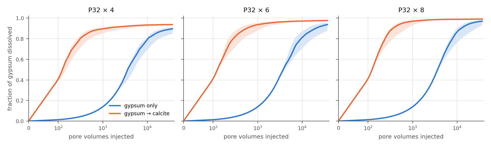
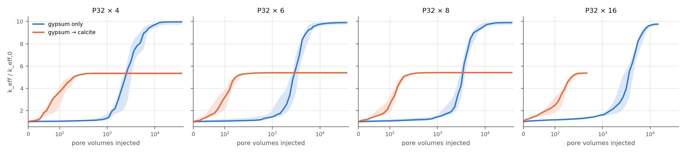
5b. Density: active area falls, participation rises
As P32 rises, the published active-surface measure \(100\,d_Q/P_{32}\) falls while \(\mathrm{PR}_V\) rises. Both are computed as defined in section 4. The participation ratio per fracture, \(\mathrm{PR}_Q/N\), falls (0.041, 0.040, 0.034, 0.025 at ×4, ×6, ×8, ×16), while the share of fractures in the 90 %-flow set rises (0.17, 0.22, 0.28, 0.34). Why published \(d_Q\) falls while \(\mathrm{PR}_V\) rises is not settled. Hypothesis: added fractures carry flow in proportion to their volume but add surface where little flow passes.
| At the start (median) | P32 ×4 | ×6 | ×8 | ×16 |
|---|---|---|---|---|
| 100 dQ/P32 (%) | about 22.5 | about 17.5 | about 15.0 | about 11.8 |
| PRV | 0.35 | 0.42 | 0.53 | 0.58 |
Source: channelization.csv per run (dQ_P32 and pr_fracture_vol, analyze_channelization.py), first saved state.
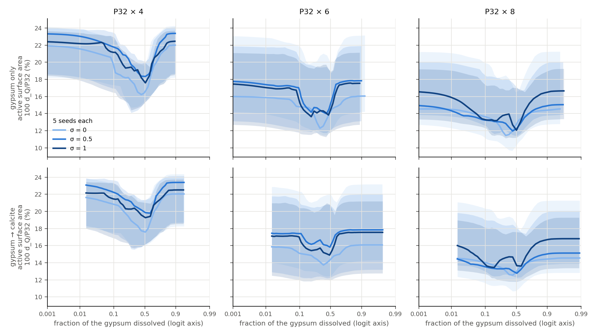
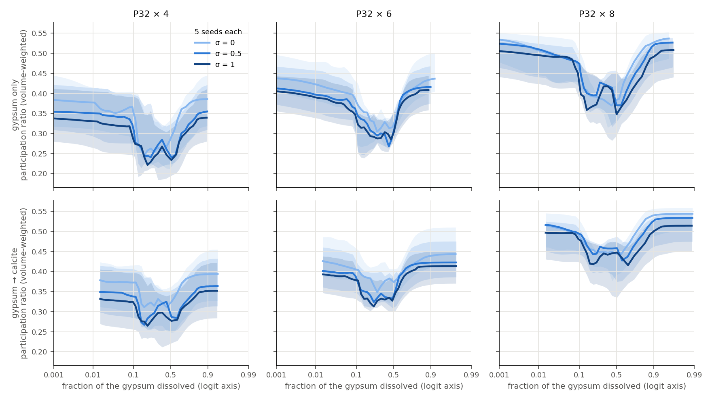
Sigma (paired networks with identical geometry). σ = 1 starts with lower PRV than σ = 0 in 13 of 15 seeds (median −0.033). At the minimum the gap shrinks to −0.016 (gypsum-only) and −0.024 (coupled).
5c. The four stages
The two participation ratios, the outlet dissolution and the front position, read together, give four stages (source: phase1_mechanism.csv and phase1_mechanism_summary.csv).
| Stage | fraction of the gypsum dissolved | What happens |
|---|---|---|
| 1 | 0–0.10 | Pore space opens near the inlet; flow still spread over filled fractures. PRpore falls (for example 0.38 to 0.20, P32 ×6, σ = 1, seed 1, gypsum-only, by 9 % dissolved) while PRV barely moves. |
| 2 | 0.10 until the outlet first passes 5 %: 0.49 [0.41–0.57] gypsum-only, 0.54 [0.46–0.59] coupled | The front advances down the inherited paths. PRpore minimum at 0.20 [0.13–0.27] gypsum-only, 0.21 [0.13–0.32] coupled. |
| 3 | PRV minimum 0.42 [0.31–0.50] gypsum-only, 0.44 [0.36–0.56] coupled; breakthrough 0.56 [0.49–0.65] gypsum-only, 0.63 [0.55–0.69] coupled | Flow focusing is strongest and the outlet goes sharply from undissolved to more than 50 % dissolved. The PRV minimum comes around the start of this stage: before the outlet passes 5 % in 40 % of the runs, and at or before breakthrough in 98 %. Breakthrough times are quantised by the save schedule. At the PRV minimum PRpore is back to a median 0.93 of its start (IQR 0.81–1.01). |
| 4 | later | Widening: both ratios recover. |
Breakthrough is expensive. When the outlet passes 50 %, the network has dissolved 53–58 % (gypsum-only) and 58–67 % (coupled) of its gypsum (per-P32 medians, ×4–×16). The range over runs is 31–82 %. Porosity 0.05 runs (Phase 2, ×4–×16): per-P32 medians 0.39–0.62 (3 runs each; the lowest is gypsum-only at ×16); single runs 0.27–0.73. The first saved state with the outlet ≥ 50 % is an upper bound: the outlet jumps from about 0.27 to about 0.63 within one saved interval.
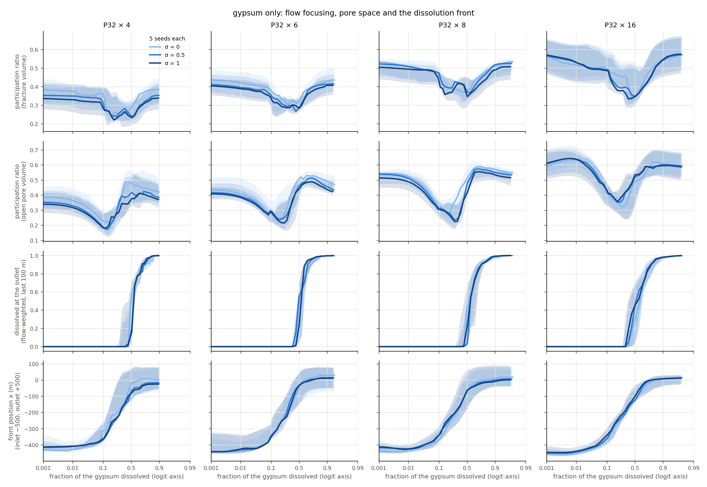
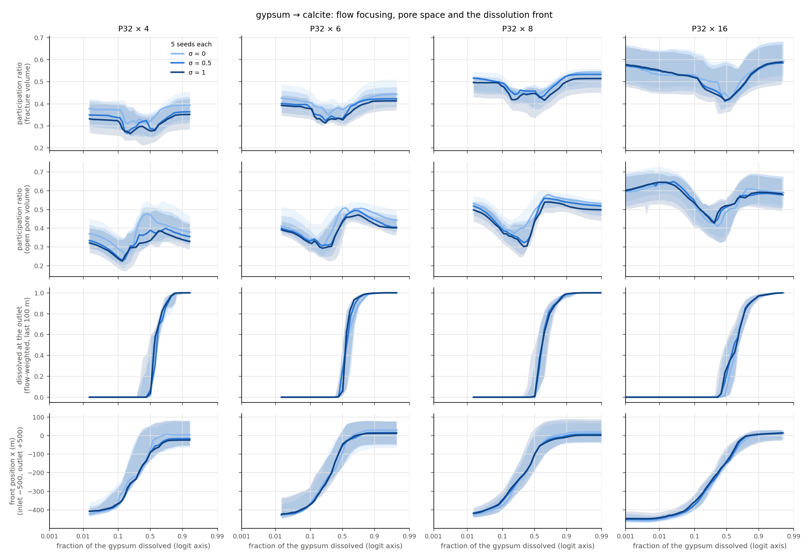
Reading the maps. Each fracture is coloured by two things: how open it is and how much flow it carries. Open channel: open space and high flow. Open space, little flow: dissolved but bypassed. Flow through filled rock: carries flow but is still mostly mineral. Filled, idle: neither. The leading edge marks where flow paths are at least 50 % dissolved (100 m average).
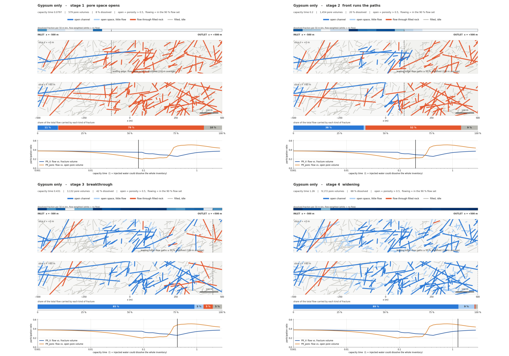
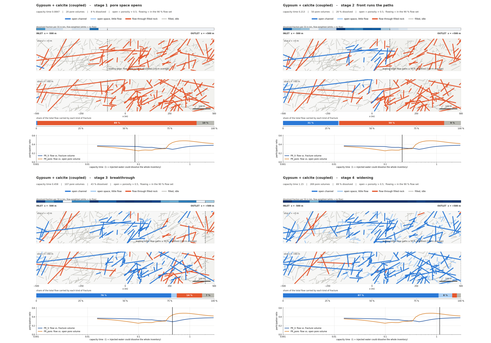
5d. Inheritance
The reaction sharpens paths that already existed. It does not open new ones. At the channel peak, 92–100 % of the fractures in the 90 %-flow set (median 97 % gypsum-only, 98 % coupled) were in the initial set. Here “channel peak” means the n90 minimum; the depth measure in section 6.4 uses the PRV minimum instead.
| Quantity | Value |
|---|---|
| Inheritance at the channel peak (n90 minimum) | 92–100 % (median 97 % gypsum-only, 98 % coupled; ×16 alone 94–98 %) |
| Share of peak-channel flow carried by initial-set fractures | 0.934 gypsum-only, 0.926 coupled (0.90 by definition at the start) |
| Newly recruited fractures, share of the peak set | 2.7 % gypsum-only, 2.3 % coupled (medians) |
| Dip around breakthrough | to about 0.95–0.97, then back to 1 |
| Jaccard overlap, gypsum-only vs coupled sets | 0.75–0.93 (median 0.83) |
| Phase 2, ×20 ceiling | 0.92–1.00 (12 runs) |
| Phase 2, 2 mM coupled | 0.94–1.00 (12 runs) |
Source: forsmark_reactive/phase1/phase1_channel_identity.csv, phase2_phi005_channel_identity.csv, phase2_co3lo_channel_identity.csv (channel_identity.py; P32 ×4–×16, 60 networks in Phase 1, 12 per Phase 2 case). The Phase 2 ×20 range was 0.95–0.99 in the earlier hand count (BRIEF.md); the script gives 0.92–1.00 on the same 9 ×4–×8 runs.

5e. Transport
While the channel forms, the median arrival time moves closer to the mean residence time \(\tau_\mathrm{res}\). The tail exponent steepens and the dispersivity falls. \(\gamma\) and \(\alpha_L\) recover once the channel has dissolved through; \(t_{50}/\tau_\mathrm{res}\) recovers only partly and stays above its start. Fine probes only, all 60 networks per chemistry (P32 ×4–×16). Medians [IQR]:
| Metric | start | channel peak | end / later |
|---|---|---|---|
| gypsum-only, t50/τres | 0.81 [0.73–0.86] | 0.91 [0.89–0.94] (50 % dissolved) | 0.86 [0.79–0.90] (94 % dissolved) |
| gypsum-only, γ | 3.39 [2.82–3.85] | 4.15 [3.67–4.74] | 3.38 [2.86–3.80] |
| gypsum-only, αL (m) | 180 [126–209] | 148 [115–186] | 185 [128–215] |
| coupled, t50/τres | 0.75 [0.67–0.81] | 0.89 [0.84–0.91] (59 % dissolved) | 0.83 [0.74–0.87] (end, 98 % dissolved) |
| coupled, γ | 3.47 [2.87–3.89] | 4.00 [3.48–4.65] | 3.35 [2.78–3.81] |
| coupled, αL (m) | 178 [125–207] | 150 [115–183] | 184 [128–217] |
Source: forsmark_reactive/phase1/phase1_tracer.csv (fine probes only). Columns are the probed state nearest tcap 0.5 (gypsum-only) or 0.63 (coupled) and the last probed state (36,515 pore volumes at ×4–×8, capacity time 2 at ×16); the dissolved fraction is the median at those states.
Denser networks move less. The excursion shrinks as P32 rises, because denser networks already start closer to plug flow:
- Gypsum-only median arrival: 0.77 → 0.89 at ×4, 0.85 → 0.92 at ×8, and 0.89 → 0.93 at ×16.
- Tail exponent: 3.25 → 4.04 at ×4 and 3.73 → 4.15 at ×16.
- Coupled runs behave the same way (median arrival 0.70 → 0.85 at ×4, 0.83 → 0.91 at ×16).
| Example, fine probes: P32 ×6, σ = 1, seed 1, gypsum-only | unreacted (0 % dissolved) | channel peak (46 %) | after widening (78 %) |
|---|---|---|---|
| median arrival / τres | 0.64 | 0.85 | 0.77 |
| tail exponent γ | 2.4 | 3.3 | 2.6 |
Source: forsmark_reactive/phase1/phase1_tracer.csv.

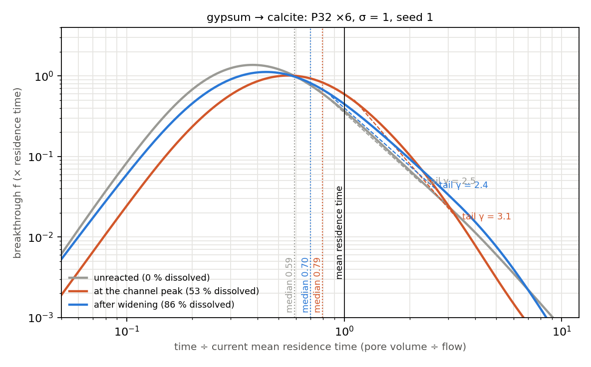
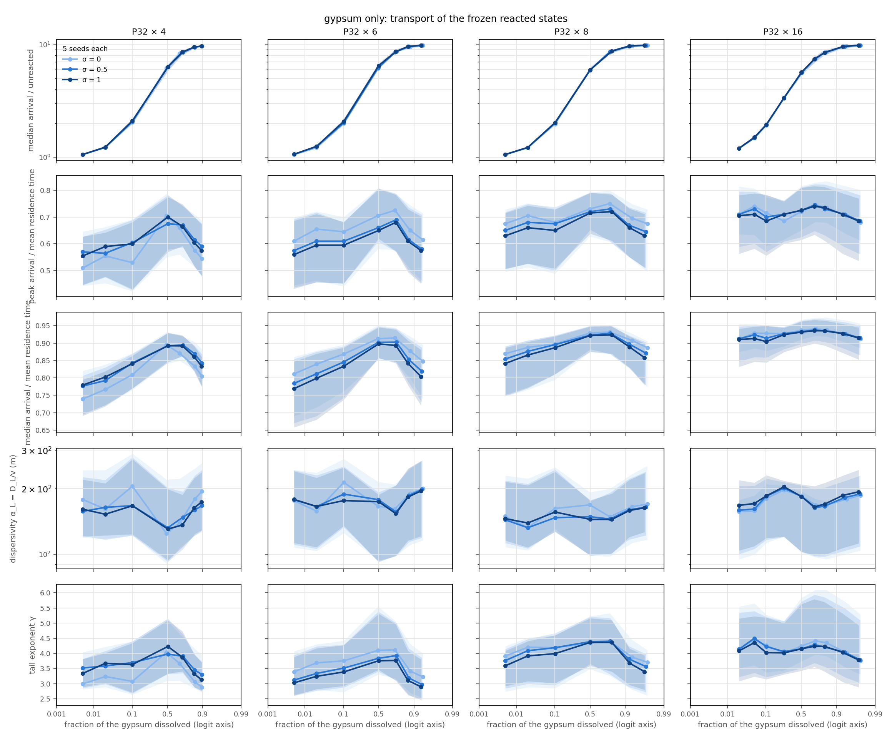
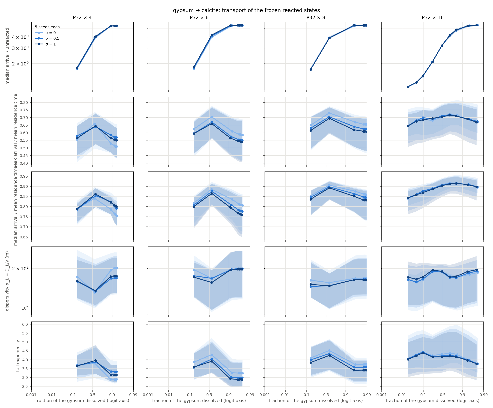
Paused-pulse movies: transport at each stage
The reaction plays, then pauses at each stage while a tracer pulse is sent through the frozen network and its breakthrough curve is drawn; then the reaction resumes. The flow field and the pore space are frozen during the pause, and the tracer does not react. The curves are shown as normalised concentration against pore volumes injected since the pulse, counted in the pore volume of the frozen network, so that all stages share both axes. On that scale the curve arrives later and flatter while the channel forms (median arrival 0.64 → 0.85 pore volumes, peak 1.26 → 0.97, gypsum-only) and comes partly back afterwards. In years the curves stretch much more, because the dissolved gypsum adds pore volume at the same flow rate (residence time 1.0 → 7.1 years); that stretch is the larger volume, not more dispersion, so the movie no longer shows a years axis.
| Example network (P32 ×6, σ = 1, seed 1) | start | pause 1 | pause 2 | pause 3 | pause 4 |
|---|---|---|---|---|---|
| gypsum-only: fraction dissolved | 0 | 0.08 | 0.20 | 0.42 | 0.68 |
| τres (yr) | 1.02 | 1.74 | 2.82 | 4.76 | 7.09 |
| t50/τres (pore volumes) | 0.64 | 0.70 | 0.78 | 0.85 | 0.82 |
| peak normalised concentration | 1.26 | 1.06 | 1.01 | 0.97 | 0.96 |
| coupled: fraction dissolved | 0 | 0.08 | 0.20 | 0.43 | 0.69 |
| τres (yr) | 1.11 | 1.48 | 2.02 | 3.05 | 4.19 |
| t50/τres (pore volumes) | 0.59 | 0.63 | 0.71 | 0.78 | 0.78 |
| peak normalised concentration | 1.37 | 1.22 | 1.14 | 1.04 | 1.01 |
Source: forsmark_reactive/phase1/figures/anim3/transport_trace_gyponly.csv and _gypcal.csv (fine probes at every movie frame, run_anim_probes.sh; make_pulse_movie.py). One network only. The coupled residence times include the mineral-free helper cells (section 5e).
In stage 1 the residence time grows by 70 % (gypsum-only, 1.02 → 1.74 yr) while t50/τres moves only from 0.64 to 0.70. The pore volume is added before the flow paths change. In stages 2–3 the shape changes: t50/τres rises to 0.85, so the tracer arrives closer to the mean as the channel holds both the flow and the open volume. In stage 4 it starts to come back (0.74 at the last movie frame). The movie stops at capacity time 3, when 82 % (gypsum-only) and 85 % (coupled) of the gypsum has dissolved; the full run on this network reaches 0.89 and 0.90 at 36,515 pore volumes. The fraction dissolved approaches 1 only slowly because after breakthrough the water leaves through the open channel undersaturated: the dissolved fraction over capacity time falls from 0.92 at capacity time 0.5 to 0.18 at capacity time 5 (gypsum-only). The gypsum left is in fractures the channel now bypasses. The left panel of each reaction frame is the decoupling movie above, unchanged; its lower plot still uses capacity time.
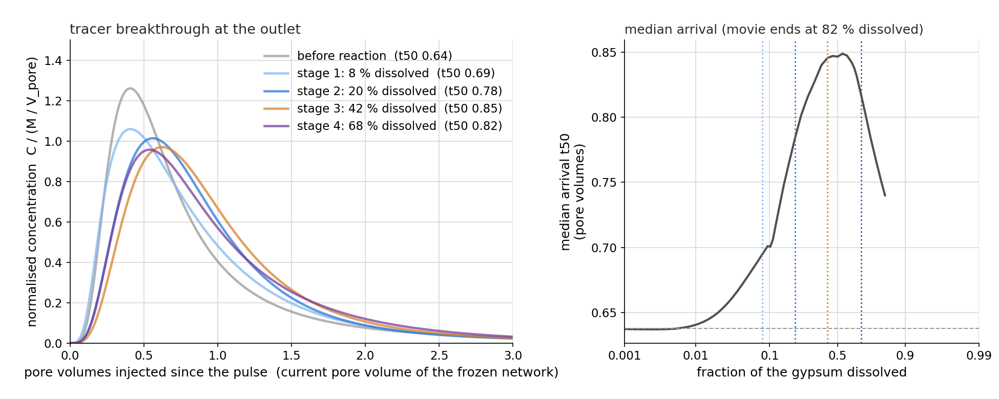
5f. A denser network set: P32 ×16
At about twice the fracture count the same stages appear. The PRpore minimum comes before or at breakthrough in 30 of 30 runs, and the full order PRpore minimum < PRV minimum ≤ breakthrough holds in 26 of 30 (87 of 90 at ×4–×8). The runs end at capacity time 2, so the last stage (the flow spreading again) is not covered. The channel is made of fractures that already carried the flow (inheritance 0.97), and its depth follows the permeability ceiling. The PRpore minimum comes later (gypsum-only median 0.25, coupled 0.35 of the gypsum dissolved), but it already moves later with P32 at ×4/×6/×8 (0.13/0.20/0.24 and 0.13/0.20/0.28).
| Phase 1 measure | P32 ×4–×8 (45 runs per chemistry) | P32 ×16 (Phase 1 protocol, 15 runs per chemistry) |
|---|---|---|
| fractures per network | 1,587–4,070 | 7,849–8,229 |
| PRV at the start | 0.35 / 0.42 / 0.53 (×4 / ×6 / ×8) | 0.58 [0.54–0.66] |
| active surface area 100 dQ/P32 at the start | 22.5 / 17.5 / 15.0 % | 11.8 % [9.2–13.5] |
| Stage events, fraction of the gypsum dissolved (gypsum-only; coupled) | ||
| PRpore minimum | 0.17 [0.13–0.24]; 0.20 [0.13–0.28] | 0.25 [0.18–0.32]; 0.35 [0.24–0.38] |
| PRV minimum | 0.37 [0.28–0.50]; 0.44 [0.36–0.56] | 0.43 [0.34–0.51]; 0.47 [0.38–0.56] |
| breakthrough (outlet ≥ 50 %) | 0.56 [0.49–0.60]; 0.63 [0.55–0.67] | 0.58 [0.49–0.66]; 0.65 [0.55–0.69] |
| order of the events | PRpore minimum at or before breakthrough in 45 of 45 runs each; full order in 43 of 45 (gypsum-only), 44 of 45 (coupled) | PRpore minimum at or before breakthrough in 15 of 15 runs each; PRpore < PRV minimum ≤ breakthrough in 14 of 15 (gypsum-only), 12 of 15 (coupled) |
| Channel depth and inheritance | ||
| depth, PRV minimum ÷ start (gypsum-only; coupled) | 0.64–0.67; 0.77–0.79 (per-P32 medians) | 0.67 [0.56–0.70]; 0.81 [0.71–0.82] |
| coupled minus gypsum-only depth, same network | +0.122 / +0.127 / +0.128, all 45 positive | +0.135, all 15 positive |
| inheritance at the n90 minimum (gypsum-only; coupled) | 0.98; 0.98 (medians, lowest 0.92) | 0.97 [0.95–0.97]; 0.97 [0.97–0.98], lowest 0.94 |
Source: forsmark_reactive/phase1/stage_events_clocks.csv (stage events, P32 16 rows) and channelization.csv per run (depth = minimum ÷ start of pr_fracture_vol; inheritance = overlap0 at the n90 minimum). Medians [IQR]. ×16 runs end at capacity time 2.
Phase 2 at ×16 (σ = 1, seeds 1–3, paired on the same network): equal ceilings give equal depth (×10.6 coupled at porosity 0.05 against ×10 gypsum-only: |difference| 0.004, 0.006, 0.010; 2 mM coupled against gypsum-only: 0.012–0.025), the ×20 gypsum-only case is deeper in all three (−0.12 to −0.13; coupled −0.12 to −0.15), and inheritance stays 0.94–0.98. The depth law and the absence of rerouting carry over, on three networks per case.
What could make it wrong. 15 networks per chemistry and one P32 level; Phase 2 has three networks per case. The PRpore minimum is later than at ×4–×8 pooled, but it rises steadily with P32 already at ×4–×8; ×16 stops at capacity time 2; in 4 of 30 runs the PRV minimum comes before the PRpore minimum.
6. Candidate findings
These five items are results that look new to us, but each rests on limited tests. For each we give the claim, a cartoon of the idea, the data, what could make it wrong, and its status. None is established yet.
6.1 Flow and pore space decouple, then realign
In mineral-filled networks, flow focusing measured against open pore volume and against fracture volume bottom out at different times.
Data. PRpore bottoms out first (20 % of the gypsum dissolved in gypsum-only runs, 21 % coupled), PRV later (42 % and 44 %), with breakthrough at 56 % and 63 % (Phase 1 medians, 60 runs each, P32 ×4–×16). In open fractures both are the same quantity, so this does not occur there.
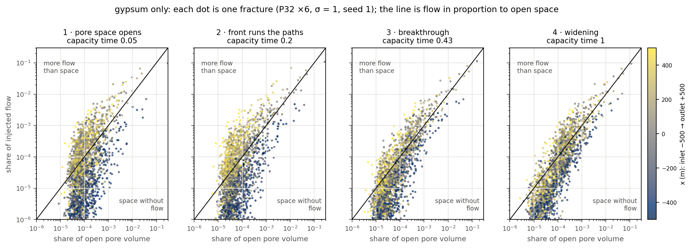
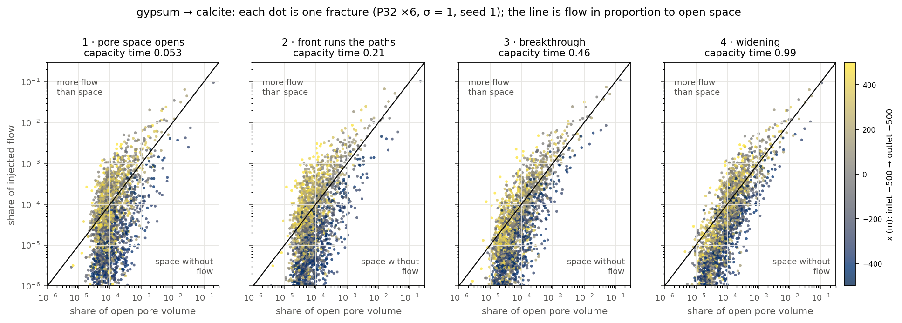
What could make it wrong. BiGraFV caveat: a long fracture opens along its whole length at once, so the offset may be model-dependent. Status. Candidate.
6.2 Channelization narrows transport
Because the dissolved channel is where the pore space is, the breakthrough curve tightens and its tail steepens while the channel forms.
Data. Section 5e, fine probes, gypsum-only medians (60 networks, P32 ×4–×16): t50/τres 0.81 to 0.91; γ 3.39 to 4.15; αL 180 m to 148 m. Coupled: 0.75 to 0.89; 3.47 to 4.00; 178 m to 150 m. Cartoon in section 5e.
What could make it wrong. Eulerian probes with numerical dispersion, a finite pulse and a truncated tail window; the γ fit window is our choice; the one-cell model is an approximation. Status. Candidate; fine probes complete on all 60 networks per chemistry.
6.3 A compact front at kilometre scale (candidate, model-dependent)
The dissolution front advances as a broad front over many parallel paths. It does not run away as a thin finger.
Data. Breakthrough costs 53–57 % (gypsum-only) and 58–67 % (coupled) of the gypsum (medians; 31–82 % over runs). A wormhole would break through after a few percent. Network argument: 9–44 parallel paths over 1 km and a gain capped at ×10–×20.
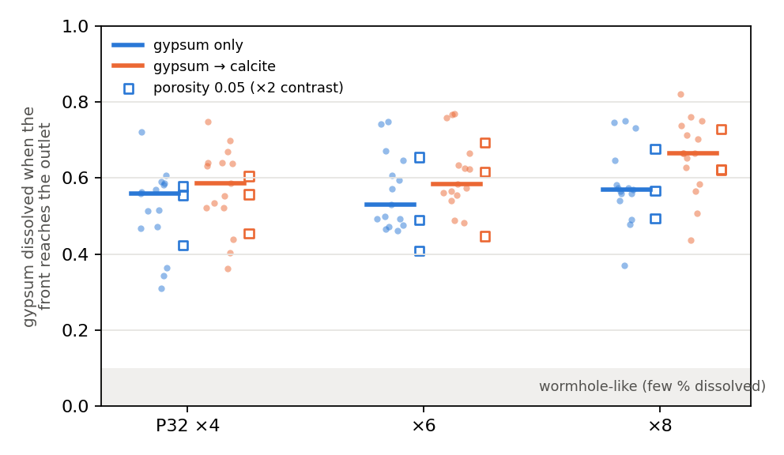
What could make it wrong (BiGraFV caveats). One cell per fracture means no in-plane fronts or wormholes by construction, and a long fracture opens along its whole length at once. On smaller paired networks, meshed DFNs channelized more than the one-cell graph (n90 ratio 0.79 vs 0.94 and 0.84 vs 0.88 on two dense networks), and graph channel timing lagged at strong k–φ feedback. The network-scale argument applies to a meshed DFN too, but front sharpness may be model-dependent. Status. Candidate, model-dependent.
6.4 A channel-depth law
The depth of the channel (PRV minimum divided by its start) is set by the permeability gain the reaction can reach, not by the chemistry.
Data. Phase 1: PRV minimum over start is 0.63–0.68 for gypsum-only across P32 and σ (medians of 5 seeds; single runs 0.49–0.80) and 0.76–0.80 for coupled (phase1_channel_minima.csv). Single runs vary 0.49–0.80 at a fixed ceiling, so we compare paired networks. Matched networks (σ = 1, seeds 1–3), channel depth; rows marked Phase 1 are the same networks from the Phase 1 runs:
| Ceiling and case | P32 ×4 | ×6 | ×8 |
|---|---|---|---|
| ×10, gypsum-only, φ0 0.1 (Phase 1) | 0.695 | 0.678 | 0.656 |
| ×10.6, coupled, φ0 0.05 (Phase 2) | 0.694 | 0.672 | 0.665 |
| about ×10, coupled 2 mM, φ0 0.1 (Phase 2) | 0.701 | 0.675 | 0.693 |
| ×5.5, coupled 0.5 M, φ0 0.1 (Phase 1) | 0.779 | 0.760 | 0.799 |
| ×20, gypsum-only, φ0 0.05 (Phase 2) | 0.625 | 0.601 | 0.468 |
| ×5.5, gypsum-only, φ0 0.182 (Phase 3) | 0.767 | 0.751 | 0.792 |
| ×3.3, coupled 0.5 M, φ0 0.182 (Phase 3) | 0.881 | 0.886 | 0.882 |
Source: channelization.csv per run, minimum ÷ start of pr_fracture_vol, median over seeds 1–3; every cell is 3 seeds.
Paired differences in depth, same network:
| Comparison | pairs | Result |
|---|---|---|
| coupled (×5.5) minus gypsum-only (×10), Phase 1 | 60 | median +0.129, all positive |
| ×20 (φ0 0.05) minus ×10 (φ0 0.1), gypsum-only | 12 | −0.07 to −0.20, all negative |
| ×10.6 coupled (φ0 0.05) vs ×10 gypsum-only | 12 | median |difference| 0.008, max 0.032 |
| 2 mM coupled vs gypsum-only | 12 | median |difference| 0.014, max 0.052 |
| ×5.5 gypsum-only (φ0 0.182) minus ×5.5 coupled (φ0 0.1), Phase 3 | 9 | median −0.012 (IQR −0.025 to −0.009), max |difference| 0.046; gypsum-only slightly deeper in all 9 |
| ×5.5 minus ×10, gypsum-only (φ0 0.182 vs 0.1), Phase 3 | 9 | median +0.082 (IQR +0.073 to +0.146), all positive |
| ×3.3 minus ×5.5, coupled (φ0 0.182 vs 0.1), Phase 3 | 9 | median +0.084 (IQR +0.074 to +0.109), all positive |
Source: channelization.csv per run, paired by network (same seed and P32, σ = 1).
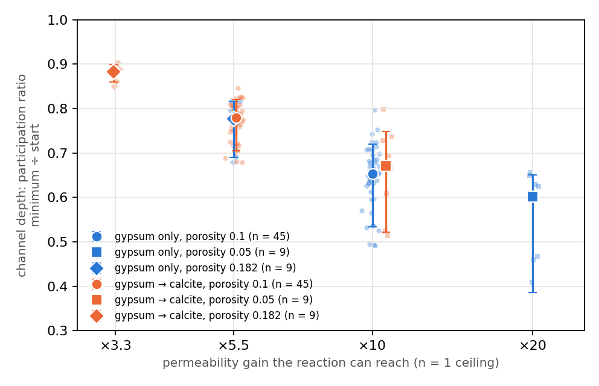
Phase 3 ceiling test. We ran gypsum-only at porosity 0.182, which gives the same ×5.5 ceiling as the coupled runs at porosity 0.1, on the same 9 networks. The depths match within a median 0.012 (gypsum-only slightly deeper in all 9), against a ceiling effect of +0.08 for the same chemistry (×5.5 against ×10, and ×3.3 against ×5.5). Equal ceilings give nearly equal depth from two chemistries and two porosities. What could make it wrong. Three seeds per case (σ = 1, P32 ×4/×6/×8). In each equal-ceiling pair the porosity differs too, so the small consistent offset (0.012) could be a porosity or a chemistry effect; the +0.08 same-chemistry pairs also change porosity with the ceiling. Status. Candidate; Phase 2 complete at ×4–×8 and the same at ×16 (section 5f, 3 networks per case); Phase 3 (9 networks) agrees.
6.5 Precipitation rerouting
Calcite forming just downstream of the dissolving zone could narrow the open path and push flow onto a neighbour.
Data. The 2 mM carbonate test (capacity matched to gypsum-only) shows no rerouting yet: channel depth matches gypsum-only (paired median |difference| 0.014, max 0.052, 12 networks, P32 ×4–×16) and inheritance at the n90 minimum is 0.94–1.00. What could make it wrong. 3 seeds per P32; the ×16 differences are slightly larger (|difference| 0.012, 0.019, 0.025, all coupled deeper; inheritance 0.95–0.97; 3 networks); a null result. Status. No rerouting in any gypsum–calcite run; rerouting needs solid-volume gain (6.7). Gypsum does re-precipitate in the coupled runs and fills 1–12 low-flow cells in 48 of 60 Phase 1 runs (5a), but these carry at most 0.0012 % of the flow; at 0.1 pore volumes per year one network fills 72 cells (8.8).
6.6 Would in-fracture wormholes change this? bound and regime map
BiGraFV cannot form a wormhole inside a fracture, so we cannot simulate one. We can say three things. Some results do not depend on the pattern inside a fracture. The published single-fracture diagrams rule out uniform dissolution here and are uncertain between compact and wormhole fronts, because our fractures lie far outside the range they were tested over. And if wormholes did form, breakthrough could come earlier by up to the factors below.
Not affected by the pattern inside a fracture. At Daf ≈ 107 the outflow of every dissolving fracture is saturated, so the network dissolves about Q·ccap per unit time until breakthrough whatever the in-fracture pattern. That covers the dissolved budget, the stage-1 timing and the clock. Which fractures form the channel is set by the network (inheritance 0.92–1.00 for dissolution), and a wormhole inside a channel fracture makes that fracture more conductive sooner, which would reinforce the inherited channel rather than replace it. This last point is our argument, not a test.
Regime map. We placed each fracture of the initial 90 %-flow set on the phase diagram of Li et al. (2026). Uniform dissolution needs Daeff,L−1 ≥ 0.278, compact needs Λ−1 ≤ 0.237, and wormholes lie between (Starchenko & Ladd 2018 give the same uniform limit, Daeff ≈ 4). Li et al. state that 0.237 is a lower bound for the compact-to-wormhole transition (transport limitation shifts it up), so the wormhole shares below are maxima, and that the framework is untested in fracture networks.
| P32 | Pe | Daeff,L | Λ−1 | flow share: uniform / wormhole / compact | flow inside the validated range |
|---|---|---|---|---|---|
| ×4 | 0.49 [0.30–0.85] | 9.5×106 | 0.17 | 0 / 77 / 23 % | 0.3 % |
| ×6 | 0.37 [0.24–0.63] | 1.2×107 | 0.13 | 0 / 70 / 30 % | 0.2 % |
| ×8 | 0.30 [0.20–0.49] | 1.5×107 | 0.10 | 0 / 63 / 37 % | 0.2 % |
| ×16 | 0.23 [0.15–0.37] | 1.9×107 | 0.08 | 0 / 58 / 42 % | 0.1 % |
Source: forsmark_reactive/phase1/wormhole_regime_summary.csv (wormhole_regime.py; Sh = 8, ns = 2, Dm = 10−9 m²/s; k with the PFLOTRAN area factor; with k per flat wall area the wormhole share is 4–5 points higher). Per-fracture (count-weighted) medians [IQR] over the 90 %-flow fractures of all networks of each P32 level; the flow-weighted medians are Pe 1.49/1.31/1.03/0.89 and Λ−1 0.53/0.46/0.36/0.32; the share column is flow-weighted. Validated range = fracture length ≤ 30 m and Pe ≥ 1.4 (Li et al. 2026); Da compared against 3.7×103. k per flat wall area, as the papers define it, is the R = 1 case (wormhole 82/75/68/62 %). Definitions and boundaries: forsmark_reactive/lit/lit_wormhole_regime.md.
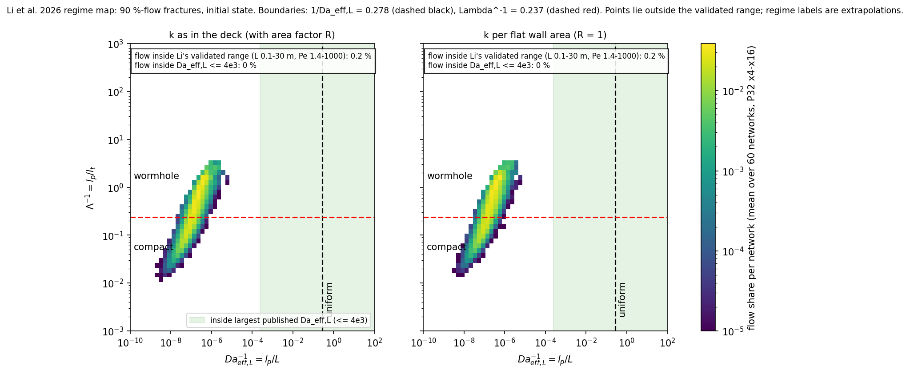
What the map does and does not say. Uniform in-fracture dissolution is excluded by a factor of about 106, robustly. The compact/wormhole split depends on the Péclet number. Most of our fractures have Pe < 1.4, the lowest value Li et al. tested (89–98 % by count, 48–63 % by flow), and our fractures are longer than their 30 m. The fluid saturates almost immediately (Da → ∞), and in that limit Szymczak & Ladd (2009) and Starchenko & Ladd (2018) find face dissolution below Pe of about 2–4 and wormholes above it. So the labels in the table are extrapolations: only 0.1–0.3 % of the flow is inside the tested range, and none is inside the largest Daeff we could check (3.7×103, Starchenko & Ladd 2018).
Breakthrough scenarios (f = share of each channel fracture that must dissolve). If a wormhole lets the front cross a channel fracture after dissolving only a fraction f of it, breakthrough comes earlier. The channel fractures (the 90 %-flow set at the n90 minimum) hold 86 % of the gypsum dissolved by breakthrough (median, both chemistries). The bound scales that part by f. The lower bound also scales the remaining 14 %; the upper bound keeps it.
| P32 ×4–×16, 60 runs per chemistry | model (f = 1) | f = 0.5 | f = 0.3 | f = 0.1 |
|---|---|---|---|---|
| gypsum-only, fraction dissolved at breakthrough | 0.56 | 0.28–0.32 | 0.17–0.22 | 0.06–0.12 |
| gypsum-only, capacity time | 0.59 | 0.28–0.32 | 0.17–0.22 | 0.06–0.12 |
| coupled, fraction dissolved at breakthrough | 0.63 | 0.31–0.36 | 0.19–0.25 | 0.06–0.14 |
| coupled, capacity time | 0.73 | 0.33–0.38 | 0.20–0.27 | 0.07–0.15 |
Source: forsmark_reactive/phase1/wormhole_bound.csv (wormhole_bound.py; medians of the lower and upper bounds over runs; f = 1 reproduces the model's breakthrough in all 120 runs). P32 ×16 gives the same within 0.03 (largest difference 0.023).
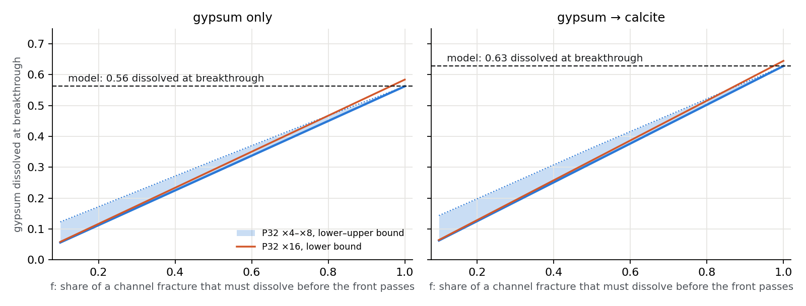
What this means for the candidates. The four stages, the inheritance and the clock do not depend on the in-fracture pattern. The compact front (section 6.3) does: with wormholes that cross a channel fracture after dissolving half of it, breakthrough would need 28–36 % of the gypsum instead of 56–63 %. That is still not “a few percent”, but the claim now rests on how much of a fracture a real front dissolves before it passes, which this model cannot tell. Status. Bound and extrapolated regime map; no simulation of in-fracture fronts.
6.7 Exploratory: olivine carbonation (one run) exploratory
Calcite alone cannot clog a well-mixed fracture: it takes back only half the volume of the gypsum it replaces. (Re-precipitated gypsum does fill a few low-flow cells in the coupled runs, 5a, without changing the flow.) To see whether the one-cell model can clog and re-route at all, we ran one network with a reaction that adds solid volume: CO2-charged water carbonating olivine. It clogs, and in this run the flow re-routes. The inlet fractures seal first, 36–44 % of the 90 %-flow set is replaced, and then a sealing front moves downstream.
Set-up. P32 ×6, σ = 1, seed 1 (the animation network), same rate (one pore volume per year), fill and k–φ law (n = 1) as Phase 1, with forsterite in place of gypsum: Mg2SiO4 + 2CO2 → 2MgCO3 + SiO2. Solids grow by 80 % with chalcedony (molar volumes from the PFLOTRAN database; published figures quote 44 %, Kelemen & Matter 2008, with quartz, and 88 %, Lisabeth et al.). 185 °C (Kelemen & Matter 2008), 1.0 mol/kg injected CO2 at pH 3.5 (estimates), forsterite dissolution and silica precipitation constants from Palandri & Kharaka (2004); magnesite uses their dissolution constants in both directions (activation energy borrowed from calcite; Saldi et al. growth rates are slower); surface areas from Steefel & Hu (2022), with a 100 m²/m³ silica seed area that has no published value. Porosity floor 10−3; with n = 1 a fracture at the floor keeps 1 % of its permeability, so “sealed” means k/k0 = 0.01, not zero. Sources: forsmark_reactive/lit/lit_olivine_carbonation.md.
| pore volumes injected | keff / initial | mean porosity | fractures at the floor | n90 | 90 %-flow set already in the initial set |
|---|---|---|---|---|---|
| 0 (start) | 1.00 | 0.100 | 0 | 458 | 1.00 |
| 1.1 | 0.98 | 0.098 | 0 | 464 | 0.98 |
| 6.1 | 0.84 | 0.091 | 8 | 511 | 0.89 |
| 13 | 0.18 | 0.082 | 52 | 674 | 0.61 |
| 74 | 0.14 | 0.070 | 213 | 644 | 0.61 |
| 300 (end) | 0.013 | 0.017 | 1,374 of 2,714 | 623 | 0.64 |
Source: forsmark_reactive/explore_olivine/L2_r15_p6.0_sg1.0_seed1/olivine__uncorrected_graph__explore/clogging.csv (clogging_summary.py; keff from patterns.csv, n90 and inheritance from channelization.csv, flow re-solved on each saved state). The olivine n90 minimum is the initial state, so inheritance is quoted at the stated pore volumes, not at the n90 minimum as in Phase 1.
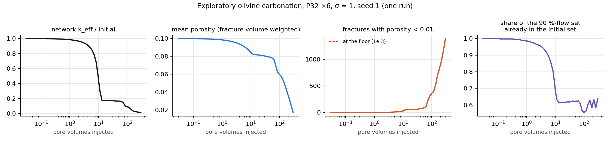
What it shows. In this run a reaction that adds solid volume re-routes the flow: inheritance falls from 1.00 to 0.55–0.64 (0.61 at 13 and 74 pore volumes), against a lowest value of 0.92 in all 120 Phase 1-protocol runs (90 at ×4–×8, 30 at ×16). Gypsum → calcite does not re-route, because each cell can only open. What could make it wrong. One run on one network. The rate is set by the assumed surface area. There is no pressure dependence, no separate CO2 phase, no serpentinisation and no reaction-driven cracking. The “seal” is a porosity floor with 1 % of the permeability left. At a fixed injection rate the inlet pressure must rise about 75-fold to push the same flow through keff = 0.013. The fast carbonation experiments (Kelemen & Matter 2008) were in bicarbonate brine near pH 8, not CO2-water at pH 3.5. Status. Exploratory; not part of the Forsmark result.
7. What is new and what is not
Most of the physical picture agrees with recent published work, now shown at 1 km. The five candidates in section 6 are what we think may be new. We found no published reactive study with thousands of fractures at this scale.
Known and consistent.
- Network channels follow the initial structure. Hyman et al. (2026): several parallel inlet-to-outlet channels enlarge along their whole length, and the networks are already strongly channelized at τ = 0. Szawełło et al. (2026): uniform dissolution cannot remove the heterogeneity set by network topology. Here, 92–99 % of the channel fractures were already in the initial set, at 1 km with 1,587 to 4,070 fractures.
- Replacement by calcite limits the permeability gain through the solid-volume ratio Γ (Budek et al. 2026, Eq. 9). Our ×5.5 ceiling is arithmetic on that ratio, not a finding.
- Reaction partly (not fully) removes heterogeneity (Hyman et al. 2026; Szawełło et al. 2026).
Checked on 5–6 November (8.12). We found no 3D network study reporting the full four-stage sequence. Spreading after breakthrough is contradicted for 3D DFN graphs with unlimited wall rock (Hyman et al. 2026) and with wall armouring (Budek et al. 2026); in our runs it comes from running out of soluble fill. A downstream-moving focusing front is published (Hyman et al. 2026, Fig. 11), but there focusing behind the front holds at its maximum. Focusing that relaxes behind the front, and a network-wide peak that can come before breakthrough, were not found in the literature (8.9, 8.10).
Candidates for new. (1) Flow and pore-space decoupling in mineral-filled networks. (2) Channelization narrowing transport. (3) A compact front at kilometre scale (model-dependent). (4) A channel-depth law set by the achievable permeability contrast. (5) Precipitation rerouting (2 mM test).
Literature context. The largest reactive graph study we found is 25 m with about 526 fractures (Hyman et al. 2026); meshed DFNs are 10 m. The only coupled 3D DFN dissolution-precipitation study is Hyman et al. (2024a), at 10 m. Hyman et al. (2026, graph) is dissolution-only. We found no km-scale reactive DFN with thousands of fractures. BiGraFV itself is unpublished.
8. Toward a manuscript: new analyses
New analyses of the existing runs, done for the manuscript. Three are useful. The initial flow field predicts how much gypsum must dissolve before breakthrough: one number does it, the flow share of the single largest-flow fracture. The tracer tail tracks how focused the flow is. And the channel narrows: about a third of the initial flow paths drop out, mostly downstream, and very few new ones join. Channel depth is a stable property of each network, but no initial-state feature predicts it out of sample. One idea did not work: dividing by the breakthrough point does not make the channel curves collapse. The ceiling test is in 6.4, the rate test in 8.8, and the DFN-validation scope in 8.7.
8.1 Breakthrough is predicted by the initial flow field
We predicted the fraction of the gypsum dissolved at breakthrough, dbt, from initial-state measures only. Each P32 level was held out in turn: train on three levels, predict the fourth. The best predictor is a single number: the initial share of the flow carried by the largest-flow fracture. The more one fracture dominates at the start, the earlier the outlet breaks through.
| Model (per chemistry) | R², leave-one-P32-out (n = 120) | MAE | Spearman | Phase 2, same 12 networks, new ceiling/porosity (n = 36): R², Spearman |
|---|---|---|---|---|
| largest-fracture flow share | 0.54 pooled (0.54 gypsum-only, 0.47 coupled) | 0.06 | 0.77 | 0.37, 0.90 |
| ridge, ≤ 3 predictors (forward selection) | 0.19 (both pooled) | 0.08 | 0.65 | 0.37, 0.90 |
| dbt ∝ initial channel volume share | 0.12 (both pooled) | 0.08 | 0.42 | −0.13, 0.34 |
Source: forsmark_reactive/phase1/breakthrough_predictor_summary.csv (breakthrough_predictor.py). Held-out R² by level for the largest-fracture share: ×4 0.38, ×6 0.75, ×8 0.76, ×16 0.32 (an extrapolation). The ridge model picks the largest-fracture share first in 14 of 15 fits (coupled with P32 ×16 held out: flow Gini first), and does worse than the single predictor (0.19 against 0.54): the extra terms overfit. The same predictors do not predict when the PRV minimum happens (leave-one-P32-out R² ≤ 0.11 over 120 runs; up to 0.4 at P32 ×6 alone, ≤ 0.18 for Phase 2).
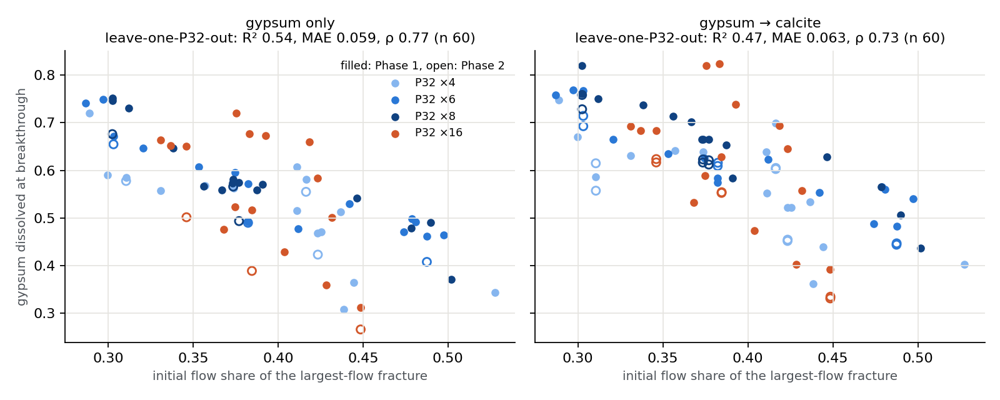
What could make it wrong. R² is 0.5, not 0.9, so the predictor ranks networks well (Spearman 0.73–0.78 with P32 held out, 0.87–0.90 for Phase 2) but leaves half of the variance unexplained. Phase 2 is not an independent network sample; per chemistry its R² is 0.19 (gypsum-only, n = 12) and 0.37 (coupled, n = 24). The ×16 level is predicted less well. It is a one-cell-model result; with in-fracture wormholes breakthrough could come earlier everywhere (6.6).
8.2 The tracer tail tracks flow focusing
Across all 1,020 probed states (Phase 1, P32 ×4–×16, 120 runs), the change in the tracer tail exponent from its start rises as PRV falls: Spearman −0.75 pooled (raw γ: −0.28, because networks start at different γ), and −0.79 [−0.90 to −0.57] within gypsum-only runs (−0.74 coupled). On P32 ×4–×8 alone these were −0.80, −0.88 and −0.76. The median arrival t50/τres follows PRV less closely (within-run −0.67 gypsum-only, −0.44 coupled). For the tail exponent, open pore space (PRpore) adds little (within-run ρ about 0.06 against γ); for t50/τres it matters more (within-run ρ +0.46). A tracer test could therefore indicate how far a channel has formed, at least in this model.
Source: forsmark_reactive/phase1/transport_channel_link_summary.csv (transport_channel_link.py). Linear models of the change in γ on the change in ln PRV and ln PRpore explain 26–45 % of the variance in sample and 21–36 % with P32 held out (×4–×8 alone: 23–44 %); with ×16 held out they explain 0–23 %. The same models for the change in t50/τres do not transfer to ×16 (held-out R² −0.9 to −3.2), so the tail exponent, not the arrival time, is the transferable signal.
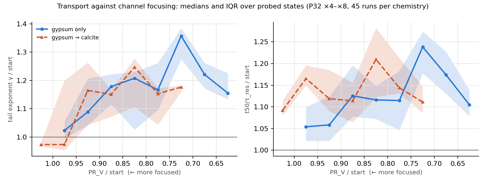
What could make it wrong. Eulerian probes with a finite pulse and window, one transport model, and half or more of the variance unexplained.
8.3 Master curves: no extra collapse from rescaling
We tested whether the channel curves of all runs collapse when time is measured relative to each run's breakthrough (d/dbt). The spread across runs (mean IQR of PRV/PRV0) is 0.096 on d and 0.104 on d/dbt (Phase 1, 120 runs), so rescaling does not help. For PRpore it helps slightly (0.234 to 0.219). The PRV minimum falls at a median 0.81 [IQR 0.65–0.90] of the breakthrough dissolved fraction, so the alignment is loose. What does not collapse is the depth, which varies from run to run (next item).
Source: forsmark_reactive/phase1/master_curve_collapse.csv (master_curves.py). The collapse metric depends on the grid, so comparisons with the time-like clocks are only indicative.
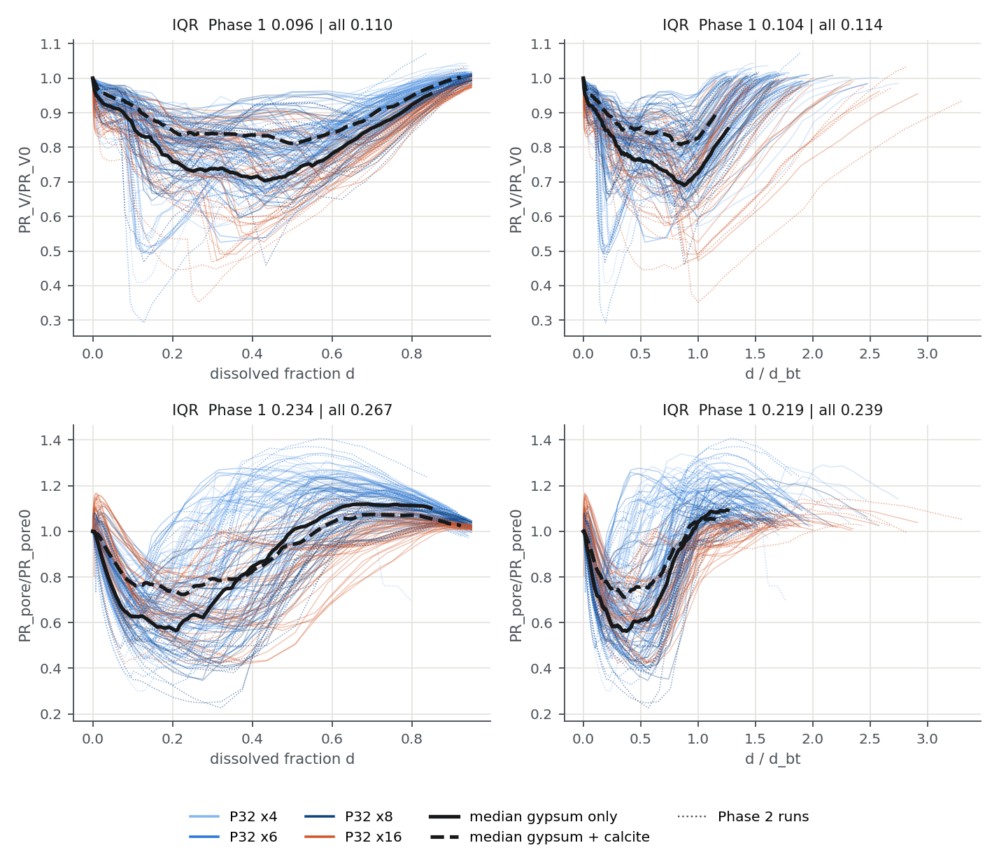
8.4 The channel narrows: who leaves and who joins
In the one-cell model, inheritance (97–98 %) says the peak channel is built from the initial one. Turnover shows the other half of the story: about a third of the initial 90 %-flow set drops out by the channel peak (median 23–44 % by P32 and chemistry; fewer in coupled runs, 23–32 %, than in gypsum-only runs, 33–44 %). Only 1.4–3.4 % of the peak set is new.
| Group (pooled over 120 Phase 1 runs) | n fractures | median x (m) | volume (m³) | aperture (µm) | initial flow rank / n | degree |
|---|---|---|---|---|---|---|
| stayers (initial and peak set) | 98,891 | −69 | 0.23 | 89 | 0.11 | 17 |
| leavers (initial set only) | 42,943 | +181 | 0.16 | 81 | 0.21 | 13 |
| joiners (peak set only) | 2,923 | +97 | 0.07 | 68 | 0.36 | 10 |
| others | 350,165 | −2 | 0.06 | 67 | 0.65 | 6 |
Source: forsmark_reactive/phase1/channel_turnover_summary.csv (channel_turnover.py). Leaver/stayer differences in position, volume, aperture, flow rank and degree are significant (run-median Wilcoxon p < 10−19, n = 120); the graph distance to the outlet is much weaker (p = 4×10−4). Pooled-fracture tests would overstate significance.
Plain answer. The stayers are the large, wide, well-connected fractures, mostly in the upstream half of the domain (median x = −69 m). The leavers are the weakest members of the initial set: smaller (volume ×0.65), narrower (×0.90), with half the initial flow, and mostly downstream (about two thirds have x > 0). They drop out where the flow converges and focuses. The few joiners are ordinary fractures that sit right next to the channel (all touch an initial-set fracture) in the downstream half, high in the flow ranking among non-channel fractures. They are side branches, not new paths.
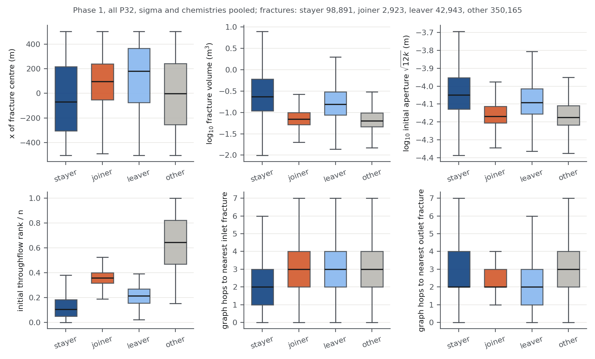
8.5 Channel depth is a property of the network; it is set early in the reaction, not by the initial state
In the one-cell model, at a fixed ceiling, single runs vary in depth (Phase 1, 60 networks, one network = 2 runs: gypsum-only 0.47–0.80, coupled 0.62–0.86). The variation is not noise: the same network keeps its rank across chemistry and porosity (Spearman 0.87 for gypsum-only against coupled after removing the P32 group medians, 0.89 raw, n = 60; 0.79–0.92 for the Phase 2 pairs, n = 12). But none of 19 initial-state features predicts it out of sample. These included the channel's volume share, the aperture contrast between channel and rest, the transmissivity spread, the path bottleneck and the inlet/outlet counts. Within-group |ρ| ≤ 0.24, none with p < 0.05, and leave-one-P32-out R² is negative.
Source: forsmark_reactive/phase1/depth_variability_summary.csv (depth_variability.py). Residual = depth minus the median of its (chemistry, phase, P32) group. Some features look strong in Phase 2 (n = 12 per case) but not in the matching Phase 1 networks, so we treat them as small-sample effects. Pooled tests over 156 runs (the same 12 networks counted repeatedly) and a partner-corrected coupled residual do show nominal signals (inlet count n_inlet90 p = 10−4; largest-fracture share ρ −0.37, p = 0.003, n = 60; 19 features, uncorrected). None survives leave-one-P32-out (R² < 0), so we call these hypotheses.
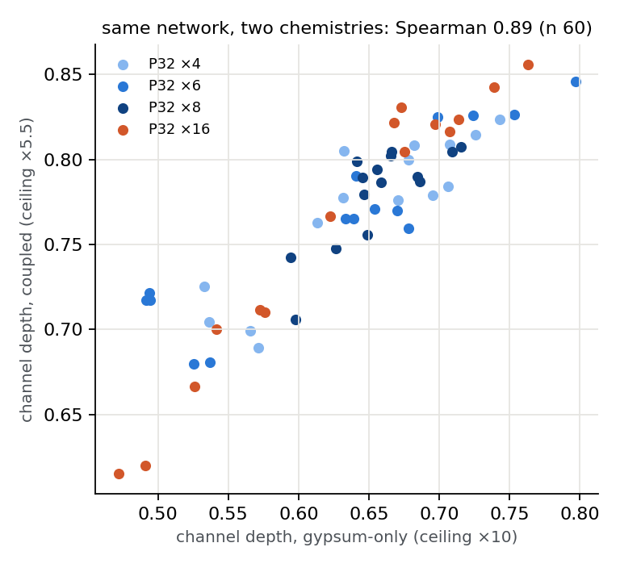
What this means. The depth law sets the level (the ceiling), and the network sets the offset. One hypothesis: the offset comes from how the first dissolution fronts grow through the network rather than from any single static feature we tried. We tested this next (below).
Early flow redistribution (tested 5 Nov). We measured how much PRV has already fallen at a fixed early dissolved fraction d* and asked whether it predicts the final depth, with the same group-centring and leave-one-P32-out test as above (Phase 1 and Phase 2, P32 ×4–×16; only runs whose PRV minimum comes after d*). At d* = 0.02 and 0.05 it does not (held-out R² −0.01 and −0.05, n = 156). At d* = 0.10 it does: Spearman 0.52 with the depth residual (p = 6×10−12, n = 155) and held-out R² 0.34 from this one number; within single conditions ρ = 0.47 (gypsum-only, n = 59), 0.28 (coupled, n = 60) and 0.74–0.76 (Phase 2, n = 12 each). At that point a median 35 % [28–47 %] of the eventual drop has happened, and the PRV minimum is still ahead (median 0.32–0.44 dissolved by condition). The other early measures (n90, largest-fracture share, flow Gini, keff, overlap) add nothing out of sample (held-out R² 0.02 without the PRV change). So the depth offset is set during stages 1–2, not readable from the initial state. This is an early warning, not a forecast: it uses the same measure partway through.
Source: forsmark_reactive/phase1/early_redistribution_summary.csv (early_redistribution_predictor.py), from channelization.csv per run and depth_variability.csv. d* = 0.20 gives ρ 0.62 but only 128 runs still have their minimum ahead, and held-out R² drops to 0.11.
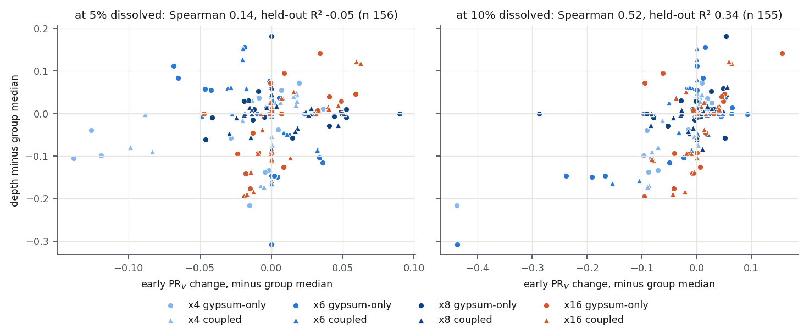
8.6 Draft figure list for the manuscript
- Set-up: network render, the one-cell model, two chemistries with their capacity and ceilings.
- Four stages: cartoon, stage-3 slices of the example network, PRV and PRpore against the dissolved fraction.
- The clock: event timing on pore volumes, tcap, d and τ. The spread is ×1.30–1.36 on d (×1.42–1.44 on tcap) against ×3.1–3.2 on τ (12 matched networks per group, P32 ×4–×16; ×1.16–1.20 on ×4–×8 alone).
- Inheritance and narrowing: inheritance through time and the turnover box plots (8.4).
- Depth law: depth against the ceiling (with the Phase 3 ceilings once in), paired differences, and the same-network scatter (8.5).
- Breakthrough predictor: dbt against the largest fracture's flow share, cross-validated, with the wormhole scenario band (8.1, 6.6).
- Transport: paused-pulse frames and the tail exponent against PRV (5e, 8.2).
- Robustness: the rate test (8.8: 100-fold range, no change) and P32 ×16 (5f).
- Supplement: DFN validation (being scoped), the regime map, the dQ size baseline, master curves, the olivine outlook.
Plan and reasoning: forsmark_reactive/MANUSCRIPT_PLAN.md.
8.7 DFN validation: scope, build and smoke test
A meshed-DFN check of the one-cell model is feasible on this laptop for one 1 km network at the lowest density (P32 ×4). It needs a regenerated network, because the Phase 1 networks were built without the feasibility checks that meshing requires. The network is now built and meshed, and a 40-step smoke test ran for both chemistries. Measured on a busy machine, a coupled run to capacity time 2 takes about 4 hours on 6 cores. A gypsum-only run to capacity time 1, which covers channel formation, takes about 2.5 days. That is 1.5–3 times the earlier estimate. We gated three regenerated networks against the Phase 1 networks; all are as typical as the Phase 1 networks themselves. One of them (seed 2) cannot be meshed, so the proposal is coupled DFN runs on seeds 1 and 3 and a gypsum-only run on seed 1.
| Option (estimates) | DFN cells | gypsum-only, to capacity time 2 | coupled, to capacity time 2 | feasible here |
|---|---|---|---|---|
| 1 km, P32 ×4, h = 1 m (recommended) | 0.78 M | 240–470 core-h | 9–17 core-h | yes (4–8 GB) |
| 1 km, P32 ×8, h = 2 m | 1.5 M | 460–1,040 core-h | 17–38 core-h | coupled only, with other runs paused |
| 1 km, P32 ×8, h = 1 m; ×16 | 2.9 M; 11 M | no (16–110 GB memory) | no | |
| 250 m block, ×4 | 0.19 M | 57–82 core-h | 2–3 core-h | yes, but cannot test 1 km depth or breakthrough |
Source: forsmark_reactive/DFN_VALIDATION_SCOPE.md. Mesh-size fit from four Forsmark mesh tests: N ≈ 0.0271·A/h² + 6.17·Lint/h (±5 % for 4 of 5 meshes; the h = 2 m test was 9 % off). DFN cost scales linearly with cells (measured on the earlier TPL comparisons); the cost model is extrapolated about 20-fold from a 36 k-cell run. The Forsmark one-cell runs take 25,700 steps (gypsum-only) and 870–930 steps (coupled) to capacity time 2. The earlier cost note (1 Nov) underestimated cells per unit area about 5-fold on TPL networks.
Built and smoke-tested (5 November). The P32 ×4, σ = 1, seed 1 network was regenerated with relaxed feasibility checks: 1,605 fractures, 9 node-disjoint inlet–outlet paths, 321 dead-end fractures (Phase 1 network with this seed: 1,608, 11, 276). The graph and the DFN come from the same dfnGen output. The h = 1 m mesh has 758,183 cells and took about 5 minutes. LaGriT wrote NaN volumes for 2 adjacent cells and NaN area for the 1 face between them; we set each volume to the median of its neighbours and that face area to 0. Steady flow: inflow 2.861×10−5 m³/s and outflow 2.868×10−5 m³/s, which is 1.43 times the graph at the same pressure drop. The reactive runs fix the volumetric rate, so this sets the pressure, not the flow. The DFN fracture volume is 524 m³, giving 52.4 m³/y at one pore volume per year.
Smoke test: both chemistries, the Phase 1 deck settings, 6 ranks, stopped after 40 steps. No time-step cuts and no solver errors. The time step grows exactly as in the graph run on the same network (5×10−6 and 4×10−6 y at step 41 for the coupled runs), so the graph step counts should carry over: 908 to capacity time 2 for coupled, 12,885 to capacity time 1 for gypsum-only. Measured cost was 15.7 s per step for coupled and 16.6 s for gypsum-only, with peak memory 9.2 and 9.7 GB. The machine load was about 22 on 14 cores, so these are upper values.
| Lane (measured cost × graph step count) | wall, 6 ranks | core-h | scope estimate |
|---|---|---|---|
| coupled to capacity time 2 | about 4 h | 24 | 9–17 core-h |
| gypsum-only to capacity time 1 | about 59 h (2.5 days) | 357 | 120–240 core-h |
| gypsum-only to capacity time 2 | about 118 h (4.9 days) | 711 | 240–470 core-h |
Sources: forsmark_reactive/dfn_validation/rf_p4.0_sg1.0_seed1/build_summary.json, network_stats.json, model_dfn/uge_repair.json, gypsum*__dfn__smoke/smoke.json (build_rfram_network.py, repair_uge_nan.py, run_dfn_case.sh). The cost per step was measured in the first 40 steps (dt up to 0.05 y); late steps at the 0.57 y cap with active fronts may cost differently. The one-cell gate runs on the same network (Phase 1 settings) are in rf_p4.0_sg1.0_seed1/*__uncorrected_graph__dfnval.
Gate (stage 0): this network is atypical in its early stages. One-cell runs on the rFram network with the Phase 1 settings, compared with the 5 Phase 1 networks at P32 ×4, σ = 1. Inside that envelope:
- depth: 0.70 gypsum-only (Phase 1 0.53–0.74), 0.78 coupled (0.69–0.82)
- inheritance: 0.99 and 1.00 (0.94–1.00)
- breakthrough: 0.57 and 0.65 dissolved (0.31–0.59 and 0.36–0.70)
- n90 narrowing and the initial PRV (0.29; 0.27–0.46)
- The PRV minimum comes at 0.11 dissolved (gypsum-only) and 0.08 (coupled), against 0.13–0.51 and 0.15–0.50. In all 120 Phase 1 runs, only one has its minimum before 0.12.
- In the coupled run PRpore rises from the first saved state (0.29 → 0.37) and never dips, so the stage-1 decoupling is absent. That happens in none of the 120 Phase 1 runs.
- The gypsum-only outlet passes 5 % at 0.57 (0.31–0.51).
Seeds 2 and 3, and a baseline. We rebuilt two more networks the same way: seed 2 has 1,468 fractures and 10 paths, seed 3 has 1,523 and 9 (Phase 1 with the same seeds: 1,744 and 10, 1,814 and 12). We ran the same one-cell gate on both. For a fair yardstick, we also scored each Phase 1 network against the other four: they fall inside the others' range on 7–14 of the 16 measures (median 9). So “inside on all 16” is too strict a gate.
| Network | inside the 5 Phase 1 σ = 1 networks (of 16) | inside all 15 Phase 1 ×4 networks (of 16) | outside all 15 |
|---|---|---|---|
| Phase 1 networks, each against the other four | 7–14 (median 9) | – | – |
| rFram seed 1 | 12 | 14 | coupled stage timing: PRV minimum at 0.08 dissolved, no PRpore dip |
| rFram seed 2 | 11 | 13 | stronger narrowing (n90 falls to 0.34 and 0.48 of its start); coupled depth 0.62 (deeper) |
| rFram seed 3 | 10 | 11 | late PRpore minimum (0.32 both); coupled PRV minimum at 0.05; depth 0.75 and 0.86 (shallower) |
All three are as typical as the Phase 1 networks themselves. Seed 2 is the only one whose stage timing (PRpore minimum, PRV minimum, outlet 5 %, breakthrough) lies inside the Phase 1 ×4 range for both chemistries. It channelizes more strongly than any Phase 1 ×4 network, which makes it a demanding test of the one-cell model (on the TPL networks the DFN channelized more than the graph). But seed 2 cannot be meshed at h = 1 m. LaGriT crashes while triangulating one fracture (32 m radius, with a 1.5 m intersection segment). It crashed again with a different mesh gradation. Changing h would change the network itself (1,454 instead of 1,468 fractures at h = 0.95 m), which would need a new gate. Seed 3 meshes cleanly: 766,560 cells, no NaN cells, and steady flow 1.17 times the graph. Seed 1 is meshed and smoke-tested. Revised recommendation:
- Run the coupled DFN on seeds 1 and 3 (about 4 h each), for two networks.
- Run gypsum-only on seed 1 (about 2.5 days to capacity time 1). Seed 1 is the most typical (14 of 16 inside all 15 Phase 1 ×4 networks), and its gypsum-only stage timing is inside that range; only its coupled timing is not.
Source: forsmark_reactive/dfn_validation/gate_summary.csv (gate_summary.py) and rf_p4.0_sg1.0_seed{2,3}/gate_check.csv.
Source: forsmark_reactive/dfn_validation/rf_p4.0_sg1.0_seed1/gate_check.csv (gate_check.py). The 120-run counts are from stage_events_clocks.csv and phase1_mechanism.csv.
Plan if approved.
- Regenerate P32 ×4, σ = 1, seed 1 with relaxed feasibility checks (rFram). Done 5 November (above). Seeds 2 and 3 were gated on 5 November (above). Seed 2 does not mesh, so the DFN runs use seeds 1 and 3. This kept 1,605 fractures and 9 inlet–outlet paths, against 1,608 and 11 in Phase 1; full checks cut it to 1,123 and 2.
- Rerun the one-cell and Delaunay graph models on that network and confirm they sit inside the Phase 1 envelope.
- Mesh at h = 1 m and check steady flow.
- Run coupled to capacity time 2, and gypsum-only to capacity time 1, with a restart file.
Risks.
- It is a new network.
- 0.6 % of intersection edges do not conform (250 m test).
- The DFN may need much smaller time steps, which would make gypsum-only infeasible. A 10-step smoke test would measure cost per step and memory; the step count would still be unknown.
- There is about a day of scripting for DFN variants of the run and analysis tools.
8.8 Rate test: no dependence on injection rate over 0.1–10 pore volumes per year (3 networks)
We reran three networks (P32 ×6, σ = 1, seeds 1–3) at 0.1 and 10 pore volumes per year, both chemistries, with the same output schedule for both rates. Across this 100-fold range, timed by the fraction of gypsum dissolved:
- Gypsum-only stage events and depth differ by at most 0.0002.
- Coupled PRV minimum, outlet 5 % and breakthrough differ by at most 0.0024; depth by at most 0.014; inheritance by at most 0.025.
- One coupled network (seed 1) has its PRpore minimum at 0.003 dissolved at the slow rate, against 0.098 at the fast rate and 0.097 at one pore volume per year. This is not a timing shift. At the slow rate gypsum re-precipitates in 72 fracture cells of that run until they fill to the porosity floor. At one saved state these cells still carry 0.41 % of the flow, and PRpore, which weights flow by open pore volume, drops from 0.37 to 0.003 for that state and recovers to 0.23 at the next. The other two slow-rate coupled networks fill 3–4 cells, as at one pore volume per year (5a).
This is the local-equilibrium limit (Daf ≈ 107) at work: the network dissolves what the water can carry, whatever the speed. Compared with the Phase 1 runs at one pore volume per year, both rates differ by up to 0.046 (breakthrough up to 0.043), while the two rates agree with each other to 0.003 on the timing events (PRV minimum, outlet 5 %, breakthrough; not on the seed-1 PRpore minimum). The offset has either sign across networks, so we attribute it to the different save times (the event is the first saved state past the threshold), not to the rate; we did not test this directly.
Source: forsmark_reactive/phase1/phase3_rate.csv (phase3_tests.py), 3 networks per chemistry. At the 10× higher rate Daf is still about 106 (about 108 at the 10× lower rate). A rate high enough to leave local equilibrium (Daf of order 1, roughly a million times faster flow) was not tested.
8.9 Where along the flow the focusing happens: a front that moves and leaves relaxed fractures behind
We binned the fractures by where their centre lies (ten 100 m bins from the inlet) and computed PRV and Hyman's active surface area for each bin at every saved state, for all 120 Phase 1 runs. Each bin focuses once, when the dissolution front passes it, and then returns to where it started:
- The front moves. The median dissolved fraction at which a bin reaches its lowest PRV rises from 0.03 in the first 100 m to 0.37–0.44 at 600–700 m and 0.50 (gypsum-only) or 0.58 (coupled) in the last 100 m.
- Each bin relaxes behind it. At the end of the runs every bin is back within 0.8 % (gypsum-only) and 1.7 % (coupled) of its starting PRV (medians).
- The outlet bin focuses most. Its PRV falls to 0.36 of its start (gypsum-only) and 0.52 (coupled), against 0.61–0.66 and 0.72–0.76 in the first 700 m. This is the local version of stage 3: flow focuses hardest just upstream of breakthrough.
- Coupled is less focused in every bin. The bin minima are higher in all ten bins, and the gap is largest in the outlet bin (0.52 against 0.36).
- Active surface area shows the same front, with shallower minima (0.62–0.85 gypsum-only).
- Robust to how fractures are binned (checked 6 November). Counting each fracture in every 100 m bin it spans (with the share of its volume in that bin), instead of only the bin of its centre, gives the same picture. Every bin returns to within 2.3 % of its start (gypsum-only) and 1.3 % (coupled). The dissolved fraction at each bin's minimum still rises from inlet to outlet (rank correlation over bins 0.94 and 0.95), from 0.11 to 0.50 (gypsum-only). The minima are shallower except in the outlet bin (0.56 gypsum-only), because the long fractures dilute each bin. Source: phase1/xbin_spanning_minima.csv (prv_decomposition.py).
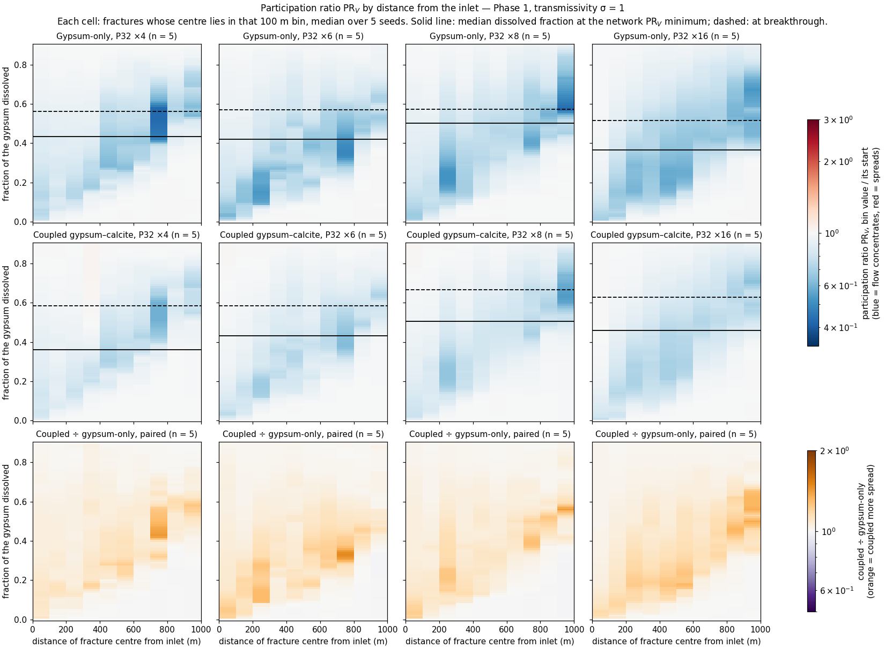
Source: forsmark_reactive/phase1/xbin_channelization.csv (xbin_channelization.py), xbin_bin_minima.csv (xbin_bin_minima.py), figure make_xbin_figure.py. A fracture that spans several bins (radii up to 564 m) is counted once, in the bin of its centre. The ×16 runs end at capacity time 2, so their panels stop at about 0.75 dissolved.
8.10 Scale test: the stages at 2 km complete
Does the four-stage sequence survive a longer and wider domain? We built the full Forsmark set again at 2000 × 500 × 250 m (same FFM01 statistics, P32 ×4/×6/×8, σ 0/0.5/1, seeds 1–5; 45 networks, 3.7–3.8 times the fractures of the 1 km networks, 24,000 to 82,000 cells) and ran both chemistries at one pore volume per year to capacity time 2. The comparison was fixed before the runs (scale2km/SCALE_TEST.md): stage events, depth and inheritance, all within capacity time 2 at both scales, and the outlet window is the last 100 m in both. All 90 runs are complete (finished 6 November), against the 90 matching 1 km runs. The three σ levels share their geometries, so the 90 runs are 15 independent networks per scale.
What holds at 2 km (90 runs).
- Breakthrough comes after the PRV minimum in 90 of 90 runs (1 km: 88 of 90).
- The pore-volume minimum comes before the PRV minimum in 83 of 90 (1 km: 89 of 90). Five of the seven exceptions are one network (seed 1 at ×8, at every σ), whose early PRV dip is as deep as or deeper than its late one.
- The channels form in the fractures that carried flow at the start: inheritance 0.96–1.00 in every run.
- On the same network the coupled run is shallower and breaks through later in 45 of 45 pairs.
- The depth stays in the same range: medians per cell 0.66–0.76 gypsum-only and 0.77–0.87 coupled at 2 km, against 0.63–0.68 and 0.76–0.80 at 1 km. No cell differs significantly (5 v 5, Mann–Whitney p ≥ 0.15).
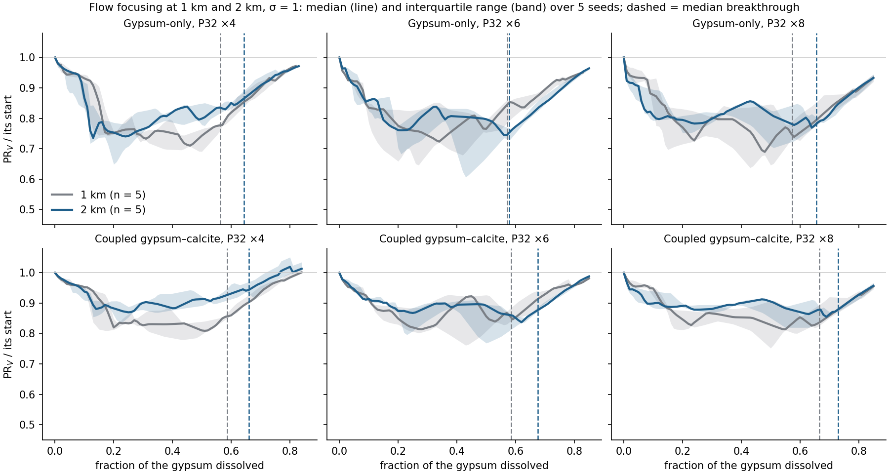
What changes.
- Breakthrough needs more of the gypsum dissolved. The cell median is later at 2 km in 18 of 18 cell–chemistry groups, by +0.006 to +0.144. Over all runs the median goes from 0.563 to 0.642 (gypsum-only) and 0.628 to 0.676 (coupled).
- No sparse-network early peak once σ = 0 is included. On some 2 km networks the network PRV has its deepest dip mid-transit, before the front reaches the outlet. Counting each geometry once (early when both chemistries are, dip before 35 % dissolved), sparse (×4) against dense (×8) at 2 km is 4 of 5 against 0 of 5 at σ 1 (Fisher p 0.048), 3 of 5 against 1 of 5 at σ 0.5 (p 0.52) and 2 of 5 against 2 of 5 at σ 0 (p 1.0). Defining “early” by the front instead (PRV minimum before the front reaches the last 100 m) gives 5/0, 4/2 and 3/3. The same geometries without transmissivity spread show no density contrast, so this is not a length–density law. An earlier version of this page reported p = 0.023 from counting runs on the same geometry as independent.
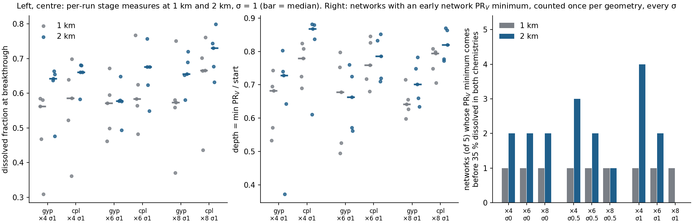
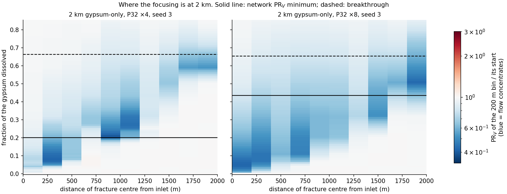
What it means. The moving front of 8.9 is the same at 2 km. The timing of the network-wide minimum is not a fixed property, but the front-occupancy test (8.13) shows it is not set simply by how much of the network the front covers at once. On some long networks the upstream stretches relax before the front reaches the outlet and the network-wide peak comes mid-transit, but this depends on the transmissivity spread and not on density (it vanishes at σ = 0). Stage 3 is better stated as “each stretch focuses most as the front passes, and the outlet stretch most of all” than as “the network is most focused just before breakthrough”.
Source: forsmark_reactive/scale2km/scale_runs.csv, scale_compare.csv, scale_mechanism.csv (compare_scale.py; flow re-solved on the frozen permeability at every saved state), figures make_scale_report_figures.py, notes SCALE_TEST.md. All 90 runs complete. σ 0.5 and σ 1 share the same geometry and differ little because most of the permeability spread comes from the size–transmissivity law (log10 k standard deviation 0.27 against 0.34 at both scales).
8.11 The k–φ exponent: n = 3 on one network
The runs use k = k0(φ/φ0)n with n = 1, which caps the permeability gain of a fully dissolved fracture at ×10. The literature review (8.12) puts realistic exponents at 3 and above. We reran one network (P32 ×6, σ 1, seed 1) with n = 3 (cap ×1000) in both chemistries, to capacity time 2. Nothing else changed, and the runs needed no time-step cuts.
| Measure (capacity time ≤ 2) | gypsum-only n = 1 | n = 3 | coupled n = 1 | n = 3 |
|---|---|---|---|---|
| Depth (min PRV / start) | 0.68 | 0.21 | 0.76 | 0.35 |
| Smallest n90 / start | 0.50 | 0.09 | 0.61 | 0.15 |
| Largest network keff gain | ×9.8 | ×727 | ×5.4 | ×135 |
| Breakthrough (fraction dissolved) | 0.46 | 0.27 | 0.48 | 0.31 |
| Active surface area depth (dQ) | 0.85 | 0.63 | 0.89 | 0.68 |
| Inheritance | 1.00 | 1.00 | 1.00 | 1.00 |
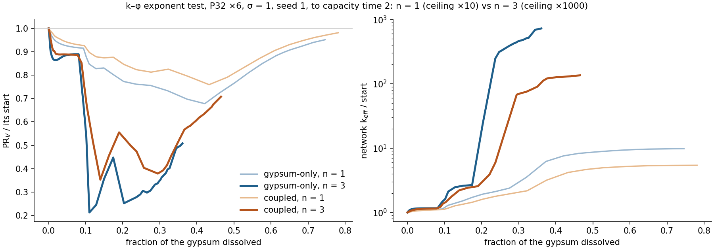
What it means. The exponent sets how deep the channel gets, as the ceiling series in 6.4 predicted, and it does not change which fractures form the channel. The order of stages changes in one way: with n = 3 the deepest focusing (at 0.11 and 0.14 dissolved) comes at the same saved state as the pore-volume minimum, mid-transit, with a second dip at about 0.20 (gypsum-only) and 0.29 (coupled) just before breakthrough. One network only; we have not run more seeds.
Ceiling or path? (E0, 6 November.) Going from n = 1 to n = 3 changes both the ceiling (×10 to ×1000) and the path to it. On the same network, four laws with the same ×10 ceiling but different shapes (n = 0.5, 1, 2, 8) give depths 0.72, 0.68, 0.66 and 0.64 (gypsum-only): the later a law delivers its gain, the deeper the channel. Stage order, inheritance (1.0) and the final network gain (×9.7–9.8) do not change. So the ceiling dominates (±0.04 from shape against 0.47 from the ceiling), and the shape is a smaller, ordered effect. That falls between the decision thresholds fixed beforehand, so a 9-network test (E1) is needed. Short report: k–φ shape pilot (E0); data forsmark_reactive/phase1/kphi_e0/kphi_e0_summary.csv.
Source: forsmark_reactive/phase1/kphi_n3_compare.csv (kphi_n3_compare.py; outlet window x > 400 m), dQ from channelization.csv, runs tagged kphi_n3, log phase1/INTERVENTIONS.md. The n = 1 numbers here are cut at capacity time 2, so they differ slightly from the full-run Phase 1 values.
8.12 Literature check: the stages and the permeability law
Three reviews (forsmark_reactive/lit/lit_staged_channelization.md, lit_kphi_relations.md, lit_channel_depth.md) asked whether others report the four stages, what k–φ laws are realistic, and whether our channel depth is physics or numerics.
- The stages. Each stage has precedent in some system, but we found the full sequence in no 3D fracture-network study. Inheritance and focusing up to breakthrough are well known (Szymczak & Ladd 2009; Hyman et al. 2026). Spreading after breakthrough is reported in 2D karst networks under fixed head (Perne et al. 2014). In 3D DFN graphs with unlimited wall rock, Hyman et al. (2026) find that channelization stops changing after breakthrough, and Budek et al. (2026) find the system freezes when products armour the walls. Our spreading is driven by running out of soluble fill, which we did not find reported. A focusing front that moves downstream is published: Hyman et al. (2026, Fig. 11) plot a flow-focusing index in cross-sections along the flow and, at their highest Damköhler number, a transition zone “develops and progresses downstream”. Behind their front focusing rises to its maximum and stays there. In our runs each stretch focuses as the front passes and then relaxes back to its start (8.9), because the soluble fill runs out. The moving front is therefore not new; the relaxation behind it, and what it does to the timing of the network-wide peak, is what we did not find reported (checked 6 November from the PDF; notes in lit_staged_channelization.md).
- The k–φ law. Kozeny–Carman behaves like n ≈ 3 at low porosity. Calibrated exponents for carbonates, cements and near-percolation rock are 3–10, and up to 20–40. A cubic-law slot gives n = 3. Only full-height open channels parallel to the flow give n = 1. So n = 1 is conservative for how strongly flow focuses. It is realistic for modest reopening under stress (core floods give ×2–×7 gains).
- Physics or numerics. The inherited, modest depth is physically sensible for a fixed-rate, high-Da network that is already channelized. Its size is set mainly by the ×10 ceiling (now confirmed directly by 8.11). One cell per fracture removes in-fracture wormholes, which the literature says leads to shallower and later channels (Hanna & Rajaram 1998; effective exponents of 6–19 where channels form, Menke et al. 2023). So the numerical bias is in the direction of shallower channels. It is not an artefact in sign.
- Active surface area. Our dQ is Hyman's graph formula exactly (checked against Maillot et al. 2016, Hyman 2020, Hyman et al. 2024b and 2026, and the dfnWorks code). Section 4 gives the comparison.
Not every full text was read; the review notes tag each source as read, abstract only or unverified.
8.13 Does the width of the focused zone set when the network is most focused? Not by this measure
8.9 and 8.10 suggested that the network-wide PRV minimum comes when the moving focused zone covers the most of the domain. We tested that on all runs with per-fracture flows saved (120 at 1 km, 69 at 2 km), with rules fixed before running: a 100 m bin is focused when its PRV is at most 0.8 of its start; the occupancy is the share of bins focused; we compare the dissolved fraction at the largest occupancy with the dissolved fraction at the network PRV minimum, to capacity time 2. We set the bar beforehand at a rank correlation of at least 0.6 with at least 60 % of runs within 0.05.
- Timing: not supported. Rank correlation 0.44 (gypsum-only) and 0.35 (coupled) at 1 km, 0.50 and 0.27 at 2 km; only 28–42 % of runs fall within 0.05. Thresholds of 0.7 and 0.9 give the same picture (0.15–0.64, 19–58 %).
- Depth: weak. A wider focused zone goes with a deeper network minimum, but weakly: −0.14 and −0.29 at 1 km, −0.53 and −0.24 at 2 km.
- The widest focused zone comes well before breakthrough: median 0.14–0.21 of the gypsum before it at 1 km and 0.23–0.33 at 2 km.
- Hyman's focusing profile does not resolve our front. We computed their index f50 (Hyman et al. 2026, Eq. 42) on planes every 20 m, using the fractures that cross each plane and their throughflow (we have no per-connection flows). About 150 fractures cross each plane and a handful carry half the flow, so f50 sits at 0.94–0.97 throughout and moves by at most 0.02. A direct comparison with their Fig. 11 needs per-connection flows or the meshed DFN.
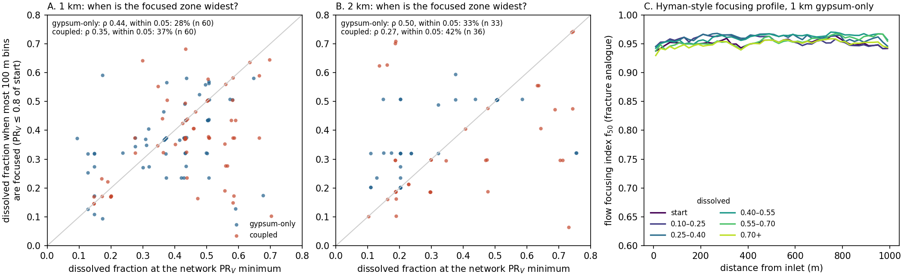
What it means. The local picture of 8.9 stands: each stretch focuses as the front passes and relaxes behind it. But counting focused stretches does not predict when the network as a whole is most focused. The network PRV is weighted by flow, and a few large high-flow fractures that span several bins can dominate it. The mechanism behind the timing of the network minimum is still open; the meshed DFN, which resolves flow inside each fracture, is the test that can separate it from the one-cell representation.
Follow-up: which fractures set the network minimum? (6 November.) Writing PRV = (Σq)2 / (Vtot Σq2/V), we split the drop in Σq2/V from the start to the network minimum among three groups fixed before running (all 120 runs at 1 km, 72 at 2 km):
- Long fractures (x-extent ≥ 200 m) do not set the timing. About 21 fractures at 1 km (71 at 2 km) hold 17–22 % of Σq2/V at the start and carry 27–39 % of its rise, more than their share. But the minimum of their own PRV does not track the network minimum: rank correlation 0.09–0.23, 42–56 % of runs within 0.05.
- The outlet stretch does not either. At the moment of the network minimum, the outlet fractures have not yet changed (median share of the drop 0.00); their own minimum comes 0.04–0.05 later at 1 km and 0.3–0.4 later at 2 km. So the network-wide minimum comes before the strongest local focusing, which is at the outlet.
- The initial channel as a whole does track it (rank correlation 0.76–1.00, 87–100 % within 0.05), but that is close to a restatement: those fractures hold 95 % of Σq2/V at the start and carry all of the drop (105–112 %).
So the network minimum is set by redistribution inside the initial channel upstream of the outlet, not by a few long fractures and not by the outlet stretch. Source: phase1/prv_decomposition_tests.csv, prv_decomposition_runs.csv (prv_decomposition.py; groups and rules in its header).
Source: forsmark_reactive/phase1/front_occupancy_tests.csv, front_occupancy_runs.csv, front_occupancy.csv, f50_profile.csv (front_occupancy.py, rules in its header); figure make_front_occupancy_figure.py. Bins by fracture centre as in 8.9. 2 km: σ 0.5 and 1 plus the σ 0 runs finished by 6 November (33 gypsum-only, 36 coupled). Runs on the same geometry are not independent; the correlations are descriptive.
8.14 Channel depth against the attainable permeability gain: one curve for both chemistries complete
8.11 and E0 showed that the ceiling (the permeability gain of a fully reacted fracture, C) matters far more than the shape of the law. Here we measure depth as a function of C. On the 9 Phase 3 networks (P32 ×4/×6/×8, σ 1, seeds 1–3) we added k = k0(φ/φ0)n with n = 1.48, 2 and 3 in both chemistries (52 runs, to capacity time 2). Gypsum-only then reaches C = ×30, ×100, ×1000; coupled, whose fractures end at porosity 0.56 because calcite replaces the gypsum, reaches ×12.6, ×30.8 and ×171. With the existing runs (×5.5 and ×10 gypsum-only, ×3.3 and ×5.6 coupled) each network has five points per chemistry. The rules were fixed before the runs (ceilsweep/CEILING_SWEEP.md). We used the power law, not a critical porosity, because porosity falls below its start in some cells (calcite, and re-precipitated gypsum on one network), where a critical porosity just under 0.1 would create artificial seals.
| Gypsum-only ceiling C | ×5.5 | ×10 | ×30 | ×100 | ×1000 |
|---|---|---|---|---|---|
| depth (PRV minimum / start) | 0.777 | 0.678 | 0.547 | 0.341 | 0.152 |
| breakthrough (fraction dissolved) | 0.649 | 0.581 | 0.490 | 0.401 | 0.270 |
| Coupled ceiling C | ×3.3 | ×5.6 | ×12.6 | ×30.8 | ×171 |
|---|---|---|---|---|---|
| depth (PRV minimum / start) | 0.882 | 0.794 | 0.650 | 0.554 | 0.352 |
Medians over the 9 networks (at ×1000 and ×171 the ×6 seed 1 network is the earlier n = 3 run, tag kphi_n3).
- Depth falls with the gain on every network (rule R1: rank correlation −1 on 9 of 9). It falls about 0.25 per tenfold increase in C (median slope) and the curve flattens at high C on all 9 networks.
- The chemistries fall on one curve (rule R2, passed at the 0.03 level). Each coupled point was compared with the same network’s gypsum-only depth at the same C: median |difference| 0.021 over 36 points. The difference has a sign: coupled is slightly shallower, more so at high C (+0.018, +0.022, +0.027 at n = 1.48, 2, 3; 6 of 36 points beyond 0.05, all positive, the largest 0.11). Part of it is that the coupled runs reach less of their nominal gain; against the network permeability gain actually reached, the median difference is 0.014.
- How strongly a network responds is itself a network property. A network’s depth rank at ×5.5 does not predict its rank at ×1000 (rank correlation 0.08), although neighbouring ceilings agree (0.72–0.90). At ×1000 depth ranges from 0.08 to 0.41 across the 9 networks.
- Inheritance stays high (medians 0.95–0.99) at every ceiling: a larger gain deepens the same channel.
- Caveat. At high gain the channel bypasses the rest of the network and dissolution slows: by capacity time 2 the gypsum-only runs have dissolved a median 0.49 of the gypsum at n = 3, against 0.85 at n = 1. So these runs do not test whether flow spreads out again after breakthrough at high gain (stage 4).
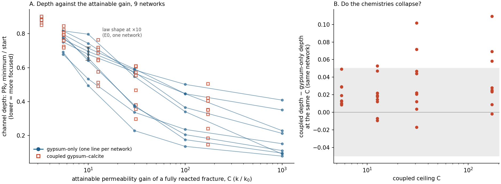
What it means. Channel depth is set by the permeability gain a reacted fracture can reach, through one curve per network, and the chemistry acts only by setting that gain (here, through the volume calcite takes up). The uncertain k–φ law therefore does not leave the result open: it moves a network along its curve. A law with a gain of ×10 (n = 1) gives the shallowest channels; Kozeny–Carman-like laws (n ≈ 3) give gains of ×100–×1000 and much deeper channels in the same fractures.
Source: forsmark_reactive/ceilsweep/ceilsweep_runs.csv, ceilsweep_residuals.csv, ceilsweep_tests.csv (analyze_ceilsweep.py; rules and run list in CEILING_SWEEP.md, make_queue_ceilsweep.py). Depth, inheritance and breakthrough within capacity time 2; flow re-solved at every saved state.
9. Limits and decisions for the user
Some results depend on modelling choices that we could not check against a published source. Three need a decision from you: the transmissivity law, the pore-volume convention, and the capacity bound.
- BiGraFV caveats. One control volume per fracture: no in-plane fronts or wormholes; a long fracture opens along its whole length at once; dead ends only approximate. On smaller paired TPL networks meshed DFNs channelized more than the one-cell graph (n90 ratio 0.79 vs 0.94 and 0.84 vs 0.88), and graph timing lagged at strong k–φ feedback.
- Transmissivity depth (decided 3 Nov: keep and label). The networks use the SKB FFM01 200–400 m fracture sets and intensities with the FFM01 0–200 m transmissivity model, T = 6.3×10−9 r1.3 (σ 1.0). The depth-consistent 200–400 m law (semi-correlated 1.3×10−9 r0.5, or correlated 1.6×10−9 r0.8) differs about 190 times at r = 100 m. With a fixed flow rate the absolute transmissivity does not set the flow, but the link between fracture size and transmissivity does, so results apply to these networks as labelled. They are not rebuilt.
- Decision: one pore volume per year. Hyman et al. (2024b) do not say whether “volume” is bulk or pore volume. We chose pore volume. The alternative would be 10 times our rate per unit bulk volume.
- ccap is an upper bound. It assumes saturated outflow. The brine pilot measured about 470 against 516.6 mol/m³ (about 9 % lower). The dissolved fraction falls below tcap after breakthrough (gypsum-only 0.95 of it at breakthrough, coupled 0.89), which is why the stages are timed on the measured dissolved fraction and tcap is kept as the prediction.
- Tail-fit window. The window [2 tpeak, t at f = 10−2 fpeak] is ours. Hyman et al. (2026) give no window.
- Eulerian probes. The tracer runs on a frozen field with numerical dispersion; first arrival is smeared. Arrivals are also divided by τres because Q is fixed while the pore volume grows up to ×10.
- k–φ exponent (n = 1). Conservative for how deep channels get; realistic exponents are 3 and above (8.12). One network at n = 3 gives depth 0.21–0.35 against 0.68–0.76 (8.11). Depths in this report should be read as a lower bound on focusing.
- 2 km scale test incomplete. ×6 and ×4 at σ 0.5 and all of σ 0 are still running (8.10). DFN validation runs are paused until you say go.
- Small samples. The depth-law table and the 2 mM result use sigma 1.0, seeds 1–3.
10. References
In the text, sources appear as (Author year). Items marked unpublished or without a DOI are given as in the source records.
- Bell, R.J., Dean, P., Hibbins-Butler, D.C. (1970). Localization of normal modes in vitreous silica, germania and beryllium fluoride. J. Phys. C 3(10), 2111–2118. doi:10.1088/0022-3719/3/10/013
- Budek, A., Szymczak, P., Kang, P.K. (2026). Fractures regulate coupled dissolution-precipitation dynamics: regime map, optimal fracture conductance, and clogging. Earth Planet. Sci. Lett. 690, 120163. doi:10.1016/j.epsl.2026.120163
- Edwards, J.T., Thouless, D.J. (1972). Numerical studies of localization in disordered systems. J. Phys. C 5(8), 807–820. doi:10.1088/0022-3719/5/8/007
- Fox, A., La Pointe, P., Hermanson, J., Oehman, J. (2007). Statistical geological discrete fracture network model, Forsmark modelling stage 2.2. SKB R-07-46.
- Fredd, C.N., Fogler, H.S. (1998). Influence of transport and reaction on wormhole formation in porous media. AIChE J. 44(9), 1933–1949. doi:10.1002/aic.690440902
- Hanna, R.B., Rajaram, H. (1998). Influence of aperture variability on dissolutional growth of fissures in karst formations. Water Resour. Res. 34(11), 2843–2853. doi:10.1029/98WR01528
- Hyman, J.D. (2020). Flow channeling in fracture networks: characterizing the effect of density on preferential flow path formation. Water Resour. Res. 56(9), e2020WR027986. doi:10.1029/2020WR027986
- Hyman, J.D., Karra, S., Makedonska, N., Gable, C.W., Painter, S.L., Viswanathan, H.S. (2015). dfnWorks: a discrete fracture network framework for modeling subsurface flow and transport. Comput. Geosci. 84, 10–19. doi:10.1016/j.cageo.2015.08.001
- Hyman, J.D., Murph, A.C., Boampong, L., Navarre-Sitchler, A., Carey, J.W., Stauffer, P., Viswanathan, H.S. (2024a). Determining the dominant factors controlling mineralization in three-dimensional fracture networks. Int. J. Greenh. Gas Control 139, 104265. doi:10.1016/j.ijggc.2024.104265
- Hyman, J.D., Navarre-Sitchler, A., Sweeney, M.R., Pachalieva, A., Carey, J.W., Viswanathan, H.S. (2024b). Quartz dissolution effects on flow channelization and transport behavior in three-dimensional fracture networks. Geochem. Geophys. Geosyst. 25(7), e2024GC011550. doi:10.1029/2024GC011550
- Hyman, J.D., Szawełło, T., Kang, P.K., Szymczak, P. (2026). Effects of dissolution regimes on flow channelization and solute transport in 3D fracture networks: insights from graph-based reactive transport modeling. J. Geophys. Res. Solid Earth 131(3), e2025JB033004. doi:10.1029/2025JB033004
- Kreft, A., Zuber, A. (1978). On the physical meaning of the dispersion equation and its solutions for different initial and boundary conditions. Chem. Eng. Sci. 33(11), 1471–1480. doi:10.1016/0009-2509(78)85196-3
- Lichtner, P.C. et al. (2015). PFLOTRAN User Manual and Theory Guide. documentation.pflotran.org.
- Maillot, J., Davy, P., Le Goc, R., Darcel, C., de Dreuzy, J.-R. (2016). Connectivity, permeability, and channeling in randomly distributed and kinematically defined discrete fracture network models. Water Resour. Res. 52(11), 8526–8545. doi:10.1002/2016WR018973
- Menke, H.P., Maes, J., Geiger, S. (2023). Channeling is a distinct class of dissolution in complex porous media. Sci. Rep. 13, 11312. doi:10.1038/s41598-023-37725-6
- Perne, M., Covington, M.D., Gabrovšek, F. (2014). Evolution of karst conduit networks in transition from pressurised flow to free-surface flow. Hydrol. Earth Syst. Sci. 18, 4617–4633. doi:10.5194/hess-18-4617-2014
- Sahimi, M. (2011). Flow and Transport in Porous Media and Fractured Rock, 2nd ed. Wiley-VCH, Weinheim. doi:10.1002/9783527636693
- SKB (2010). Data report for the safety assessment SR-Site. TR-10-52, Table 6-75.
- Szawełło, T., Hyman, J.D., Kang, P.K., Szymczak, P. (2026). Structural barriers to complete homogenization and wormholing in dissolving porous and fractured rocks. Int. J. Rock Mech. Min. Sci. 200, 106431. doi:10.1016/j.ijrmms.2026.106431
- Szymczak, P., Ladd, A.J.C. (2009). Wormhole formation in dissolving fractures. J. Geophys. Res. 114, B06203. doi:10.1029/2008JB006122
- Szymczak, P., Ladd, A.J.C. (2012). Reactive infiltration instabilities in rocks. Fracture dissolution. J. Fluid Mech. 702, 239–264. doi:10.1017/jfm.2012.174
- Kelemen, P.B., Matter, J. (2008). In situ carbonation of peridotite for CO2 storage. PNAS 105(45), 17295–17300.
- Li, Hu, Szawełło, Yang, Chen, Szymczak, Zhou (2026). From core to field: pattern selection in dissolving fractures. Geophys. Res. Lett. 53, e2026GL123899.
- Lisabeth, H., Zhu, W., Xing, T., De Andrade, V. Accepted manuscript on hydration and carbonation of dunite, OSTI 1421960 (journal record not confirmed).
- Palandri, J.L., Kharaka, Y.K. (2004). A compilation of rate parameters of water–mineral interaction kinetics for application to geochemical modeling. USGS Open-File Report 2004-1068.
- Starchenko, V., Ladd, A.J.C. (2018). Water Resour. Res. 54, 7946–7959. doi:10.1029/2018WR022948
- Steefel, C.I., Hu, M. (2022). Water Resour. Res. 58, e2022WR032321.
- BiGraFV: this work, unpublished.
11. Appendix: runs and files
Phase 1, Phase 2 and the P32 ×16 set are complete (4 November).
| Set | Content | Status |
|---|---|---|
| Phase 1 | 45 networks × {gypsum-only, coupled} = 90 runs, to 36,515 PV | complete |
| Phase 2 | σ = 1.0, seeds 1–3, P32 ×4/×6/×8/×16. Initial porosity 0.05 (gypsum-only and coupled, 0.5 M); coupled 2 mM carbonate at porosity 0.1 (capacity matched to gypsum-only). Run to capacity time 2. | complete |
| 2 km scale test | 2000 × 500 × 250 m, 45 networks × 2 chemistries = 90 runs, to capacity time 2 (scale2km/) | 45 done (6 Nov 05:00); σ 0.5 ×6/×4 and σ 0 running |
| k–φ n = 3 | P32 ×6, σ 1, seed 1, both chemistries, to capacity time 2 (tag kphi_n3) | complete |
| P32 ×16 | 15 networks × 2 chemistries, to capacity time 2 | complete (section 5f) |
Paths are relative to src/alpha_study/forsmark_reactive/.
- Data:
phase1/phase1_end_summary.csv,phase1_channel_minima.csv,phase1_channel_identity.csv,phase1_mechanism.csv,phase1_mechanism_summary.csv,phase1_tracer.csv,phase1/network_stats.json. - Code:
time_axes.py(four clocks),stage_events_clocks.py(stage events on every clock),analyze_channelization.py(participation ratios),network_forsmark.py,build_km_graph_network.py --forsmark,exfix_outflow.py. - New (6 Nov):
phase1/xbin_channelization.csv,phase1/xbin_bin_minima.csv,phase1/metric_depth_compare.csv,phase1/kphi_n3_compare.csv,scale2km/scale_runs.csv,scale2km/scale_compare.csv,scale2km/SCALE_TEST.md; scriptsxbin_channelization.py,make_xbin_figure.py,scale2km/compare_scale.py,kphi_n3_compare.py,make_scale_report_figures.py; reviews inlit/. - Figures:
report_phase1/img/; tracer figures fromphase1/figures/; cartoons inreport_phase1/cartoons/.